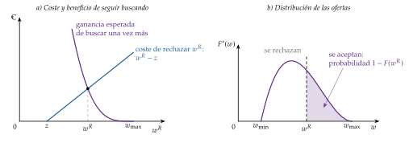
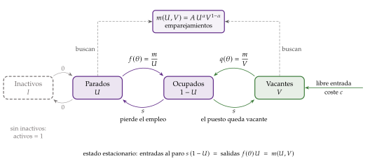
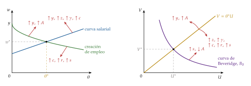
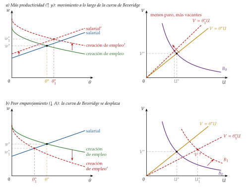
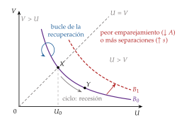
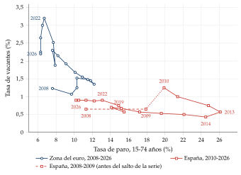
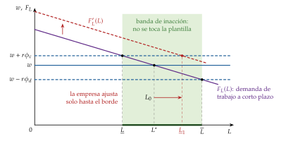
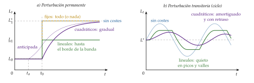
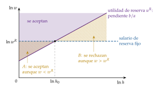
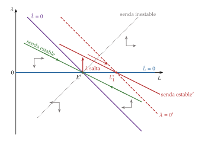

Tema 3.A.26
Desempleo friccional. La curva de Beveridge, el modelo de búsqueda y emparejamiento de Diamond, Mortensen y Pissarides. Costes de ajuste y dinámica de la demanda de trabajo.
Búsqueda de McCall y salario de reserva, modelo de Diamond-Mortensen-Pissarides, curva de Beveridge en España, condición de Hosios y costes de ajuste del empleo
Exclusivo Material exclusivo de victorgutierrezmarcos.es y la app Oposición TCEE · DCE. Puedes usarlo libremente para tu estudio personal. No se autoriza su incorporación a otras plataformas, aplicaciones o servicios. Condiciones de uso.
Introducción
Enganche:
«Cada oveja con su pareja», dice el refrán. En el mercado de trabajo, cada parado busca su puesto y cada empresa su trabajador, y no se encuentran a la primera.
En España había 2.591.200 parados en el tercer trimestre de 2026, el 10,18 % de los activos (Instituto Nacional de Estadística, 2026a), y a la vez las empresas tenían 150.765 puestos vacantes sin cubrir (Eurostat, 2026a): unos 16,5 parados por vacante si se comparan los datos del mismo trimestre (Instituto Nacional de Estadística, 2026c).
Detrás está la pregunta de esta exposición: ¿cómo puede haber a la vez gente que busca trabajo y trabajo que busca gente? En el modelo de oferta y demanda, el salario se movería hasta que no sobrara nadie. Aquí veremos por qué no ocurre y qué consecuencias tiene.
Relevancia:
Teórica: explica el paro que existe incluso cuando la economía va bien, y da fundamento a la tasa natural de paro [ver tema 3.A.28]. Peter Diamond, Dale Mortensen y Christopher Pissarides recibieron el Premio Nobel de Economía en 2010 «por su análisis de los mercados con fricciones de búsqueda» (The Nobel Prize, 2010).
Macroeconómica: el modelo de búsqueda y emparejamiento es hoy el mercado de trabajo de muchos modelos de equilibrio general dinámico y estocástico (EGDE) (Blanchard y Galí, 2010) [ver tema 3.A.7], y la curva de Beveridge es un indicador de coyuntura que siguen los bancos centrales.
De política económica: las prestaciones por desempleo, los servicios públicos de empleo, los costes de despido y la dualidad entre contratos temporales e indefinidos se analizan con estas herramientas.
Contextualización:
En el modelo neoclásico del mercado de trabajo, el salario real vacía el mercado y no hay paro involuntario salvo con un salario mínimo [ver tema 3.A.25]. Esta exposición levanta 2 de sus supuestos (tabla 1):
la información perfecta (supuesto 2): el trabajador no sabe qué empresa paga qué, ni la empresa dónde está el trabajador que necesita;
la movilidad sin costes de ajuste (supuesto 7): encontrarse lleva tiempo, y cambiar de plantilla, dinero.
La negociación, los salarios de eficiencia y los contratos implícitos levantan otros [ver tema 3.A.27].
El paro friccional es el de quien está entre 2 empleos o acaba de entrar en el mercado y aún no ha encontrado puesto: buscar lleva tiempo.1 Se distingue de otros 2 tipos de paro:
el estructural: las cualificaciones o el lugar de los parados no encajan de forma duradera con las vacantes;
el cíclico: nace de una demanda agregada insuficiente.
El friccional y el estructural forman la tasa natural de paro [ver tema 3.A.28]; la frontera entre los 2 es borrosa, y en los modelos de esta exposición ambos se recogen en la eficiencia del emparejamiento.
La idea es antigua: Beveridge (1909) ya veía el paro como un problema de organización de muchos mercados de trabajo, y Hicks (1932) contaba el paro friccional entre el que existe incluso en un estado estacionario. Pero la forma de modelizarlo llegó con la teoría de la búsqueda de los años 60 y 70 (Stigler, 1962; McCall, 1970; Phelps, 1970), que no es un retoque del marco de Marshall, sino una nueva forma de describir el intercambio, con puestos, vacantes y visitas sucesivas a empresas.2
Por el lado de la empresa, levantar el supuesto 7 significa que contratar y despedir cuesta: es la teoría de los costes de ajuste de la demanda de trabajo (Oi, 1962; Hamermesh, 1993).
Tabla 1.– Supuestos del modelo neoclásico del mercado de trabajo que levanta esta exposición N.º Supuesto En el mercado de trabajo Se levanta en esta exposición 2 Información perfecta y simétrica el trabajador conoce los salarios que se pagan y la empresa, la productividad del trabajador la información es imperfecta, aunque simétrica: hay que buscar las ofertas (I) y los emparejamientos (II) 7 Movilidad perfecta, sin costes de ajuste los trabajadores cambian de empleo y las empresas de plantilla sin coste encontrar pareja lleva tiempo (II) y cambiar la plantilla cuesta (III) Fuente: elaboración propia; numeración y redacción de la tabla de supuestos del modelo neoclásico del mercado de trabajo [ver tema 3.A.25].
Problemática:
¿Por qué hay a la vez parados y vacantes, incluso con salarios flexibles?
¿Por qué un parado que optimiza rechaza ofertas? ¿Es voluntario ese paro?
¿Qué determina el paro de equilibrio? ¿Es eficiente? ¿Qué dice la curva de Beveridge sobre el ciclo y sobre el funcionamiento del mercado de trabajo?
¿Cómo ajustan las empresas su plantilla cuando contratar y despedir cuesta? ¿Qué efecto tiene la protección del empleo?
Estructura: la exposición va del parado que busca solo al mercado entero, donde también buscan las empresas, y después al otro lado del mercado, la empresa que ajusta su plantilla:
I. Modelos de búsqueda (I): por qué un parado que optimiza rechaza ofertas; el salario de reserva de McCall y la paradoja de Diamond;
II. El modelo de Diamond, Mortensen y Pissarides (II): trabajadores y empresas se buscan a la vez y el paro friccional es de equilibrio; la curva de Beveridge (II.3) lo resume en los datos, y la condición de Hosios dice cuándo es eficiente;
III. Costes de ajuste y dinámica de la demanda de trabajo (III): contratar y despedir cuesta, y la empresa suaviza el empleo a lo largo del ciclo.
3.A.26. Desempleo friccional, curva de Beveridge, DMP y costes de ajuste
Introducción
I. Modelos de búsqueda
1. Orígenes . Stigler . McCall: \(w^R\) y paradoja de Diamond
II. El modelo de Diamond, Mortensen y Pissarides
1. Idea . Modelo: creación de empleo, curva salarial y Hosios
3. La curva de Beveridge . Evidencia . Extensiones . Valoración
III. Costes de ajuste y dinámica de la demanda de trabajo
1. Idea . Modelo: fijos, lineales (banda de inacción), cuadráticos (\(\lambda_t\))
3. Evidencia . Extensiones . Valoración
Conclusión
Reparto del cante: introducción, 2′30″; I, 5′ (I.1, 0′30″; I.2, 0′30″; I.3, 4′); II, 13′30″ (II.1, 1′; II.2, 7′; II.3, 2′30″; II.4, 1′; II.5, 0′30″; II.6, 1′30″); III, 8′ (III.1, 1′; III.2, 5′; III.3, 0′45″; III.4, 0′15″; III.5, 1′), y conclusión, 1′. La búsqueda de primera generación es breve: solo el salario de reserva y la paradoja. La pizarra se organiza en 3 zonas fijas, como en el modelo neoclásico del mercado de trabajo [ver tema 3.A.25] y en la determinación de salarios [ver tema 3.A.27]. A la izquierda, los supuestos que se levantan (2, información perfecta; 7, movilidad sin costes de ajuste) y los refranes pegatina: «quien busca, halla» (pero buscar cuesta), «cada oveja con su pareja» (el del enganche: el emparejamiento), «ni tanto ni tan calvo» (Hosios), «vísteme despacio, que tengo prisa» (costes convexos) y «más vale malo conocido que bueno por conocer» (banda de inacción). En el centro, los gráficos por capas: la densidad de ofertas con \(w^R\) (I); los 2 paneles del DMP, \((\theta,w)\) y \((U,V)\), que se quedan hasta el final del bloque para la estática comparativa y la curva española (II); las sendas del empleo con costes cuadráticos y lineales y la banda de inacción (III). A la derecha, las ecuaciones recuadradas: \(w^R\), \(m(U,V)\) con \(f(\theta)\) y \(q(\theta)\), la creación de empleo, la curva salarial, \(U=s/(s+f(\theta))\), \(\gamma=\alpha\) y la ecuación de \(\lambda_t\).
I. Modelos de búsqueda
Este apartado de la exposición ha de ser breve (5′). Los orígenes y Stigler, en una frase cada uno. De McCall, el salario de reserva con su ecuación recuadrada y su gráfico, la estática comparativa de palabra y la paradoja de Diamond como puente hacia el emparejamiento. Se apunta «quien busca, halla» junto a \(w^R\) y se marca el supuesto 2 a la izquierda. Las demás extensiones de la búsqueda (Blau, la impaciencia, la elegibilidad, la participación, el esfuerzo) están en el anexo A.
Conclusión anticipada: si encontrar empleo lleva tiempo y la información cuesta, el parado racional no acepta la primera oferta; fija un salario de reserva y el paro es el tiempo que tarda en llegarle una oferta que lo supere. Pero el modelo toma los salarios que ofrecen las empresas como dados, y cuando se deja que las empresas los elijan, se cae.
I.1. Los orígenes de los modelos de búsqueda
Lecturas complementarias: J. Fernández-Villaverde, Job search y Random matching (apuntes de clase, Universidad de Pensilvania).
En el modelo neoclásico no hay paro friccional: con información perfecta y movilidad sin costes, quien quiere trabajar al salario de mercado encuentra empleo al instante, y no hay paro involuntario salvo con un salario mínimo [ver tema 3.A.25]. Pero buscar empleo cuesta tiempo y recursos, y eso genera paro friccional.
La idea de las fricciones es antigua:
Beveridge (1909) atribuía el paro a imperfecciones del ajuste (cambios en la estructura industrial, fluctuaciones de la actividad y reservas de mano de obra en los oficios más volátiles) cuyo fondo común es que no hay un mercado de trabajo, sino muchos. Su receta, coherente con el diagnóstico, era organizarlo mejor y centralizarlo con oficinas de empleo.3
Hicks (1932) admite que la teoría pura deja poco sitio al paro, aunque sea un hecho innegable, y lo explica por 3 vías: trabajadores poco empleables, sindicatos y paro friccional, que existe incluso en un estado estacionario y que entiende como un fenómeno de equilibrio.4
Las fricciones vuelven a finales de los años 50:
Lipsey (1960), al fundamentar la curva de Phillips, muestra que cuando el exceso de demanda de trabajo es nulo el paro sigue siendo positivo, por las fricciones.
A finales de los años 60, Phelps (1967) y Friedman (1968) llaman tasa natural de paro al nivel al que tiende la economía cuando las expectativas se cumplen [ver tema 3.A.5] [ver tema 3.A.28].5
Faltaba la teoría que dijera cuánto paro friccional hay y de qué depende. La aportan los modelos de búsqueda de Stigler y McCall.
I.2. La aportación de Stigler (1961, 1962)
a) Idea
b) Modelo
i) Supuestos
Un parado puede pedir ofertas a empresas que pagan salarios distintos por puestos idénticos: solo varía el salario.
Conoce la distribución de los salarios, \(F(w)\), pero no qué paga cada empresa: la información es imperfecta (se levanta el supuesto 2).
Cada consulta cuesta: costes directos (desplazamientos, llamadas, currículos) y de oportunidad (el salario o el ocio que se pierden mientras se busca). El acceso a las empresas deja de ser perfecto (se levanta el supuesto 7).
ii) Desarrollo
Sin costes de búsqueda, el parado consultaría a todas las empresas y elegiría la que más paga.
Con costes, elige de una vez el tamaño de la muestra: consulta a \(n\) empresas, con \(n\) tal que el coste marginal de una consulta más iguale la mejora esperada del mejor salario de la muestra, y se queda con la mejor oferta.
iii) Implicaciones
La información tiene un precio y se compra hasta que deja de compensar: el parado acepta salarios inferiores al máximo que se paga en el mercado, y la dispersión salarial persiste.
c) Valoración
Nadie busca así: se mira una oferta, se decide y, si no convence, se sigue buscando. Es la búsqueda secuencial de McCall.
I.3. La aportación de McCall (1970): el salario de reserva
a) Idea
McCall (1970) plantea la búsqueda secuencial: cada periodo llega una oferta; el parado la acepta o la rechaza y sigue buscando.
La regla óptima es un umbral, el salario de reserva, \(w^R\): el salario que deja indiferente entre aceptar la oferta y seguir buscando. Se aceptan las ofertas iguales o superiores y se rechazan las demás.
«Quien busca, halla», dice el refrán, pero buscar cuesta: el salario de reserva equilibra lo uno y lo otro.
b) Modelo
i) Supuestos
Un parado neutral al riesgo maximiza el valor esperado de sus ingresos descontados con el factor \(\beta\in(0,1)\), en tiempo discreto: \[\mathbb{E}\Big[\sum_{t=0}^{\infty}\beta^{t}x_t\Big],\qquad x_t=\begin{cases}w & \text{si está empleado}\\ z & \text{si está parado}\end{cases}\] con \(z\) lo que obtiene mientras busca: la prestación por desempleo y el valor del ocio, netos de los costes directos de buscar.
Cada periodo recibe una oferta \(w\), extraída de una distribución conocida \(F(w)\), independiente entre periodos. Conoce la distribución, no la oferta que le llegará.
El empleo aceptado dura para siempre (ad infinitum): ni despidos ni búsqueda desde el empleo.
ii) Desarrollo
Valores. Con la notación del modelo de búsqueda y emparejamiento (II.2), el valor de aceptar la oferta \(w\) es \(V_{\mathrm E}(w)=w+\beta V_{\mathrm E}(w)=w/(1-\beta)\), y el de seguir parado, \(V_{\mathrm U}\), cumple la ecuación de Bellman: \[V_{\mathrm U}=z+\beta\int_0^{\infty}\max\Big\{V_{\mathrm U},\ \frac{w}{1-\beta}\Big\}\,dF(w)\tag{2}\] hoy cobra \(z\) y mañana elige lo mejor entre la oferta que le llegue y seguir buscando.
La regla es un umbral. \(V_{\mathrm E}(w)\) crece con \(w\) y \(V_{\mathrm U}\) no depende de la oferta, así que se acepta si y solo si \(w\geq w^R\), con \(w^R/(1-\beta)=V_{\mathrm U}\). Sustituyendo en (2) (anexo A):
\[\underbrace{w^R-z}_{\text{coste de rechazar }w^R}=\underbrace{\frac{\beta}{1-\beta}\int_{w^R}^{\infty}(w-w^R)\,dF(w)}_{\text{ganancia esperada de buscar una vez más}}\tag{3}\]
a la izquierda, lo que se pierde por seguir buscando con una oferta \(w^R\) en la mano: cobrar \(z\) en lugar de \(w^R\);
a la derecha, lo que se espera ganar con una búsqueda más: la mejora sobre \(w^R\) de las ofertas que lo superan, para siempre.
Interpretación gráfica (gráfico 1). El coste marginal de seguir buscando, \(w^R-z\), crece con \(w^R\); el beneficio marginal decrece, porque cuanto más exigente es el parado, menos ofertas superan su umbral. Se cortan en \(w^R\). En el panel de la distribución, se aceptan las ofertas a la derecha de \(w^R\), con probabilidad \(1-F(w^R)\).

Fuente: elaboración propia a partir de McCall (1970) y Cahuc, Carcillo y Zylberberg (2014, cap. 5).
iii) Implicaciones
Duración del paro: con una oferta por periodo, la probabilidad de salir del paro en cada uno es \(1-F(w^R)\), y la duración esperada del paro, \(1/[1-F(w^R)]\).
Estática comparativa de (3): el umbral sube, y con él lo que dura el paro,
si sube la prestación \(z\): buscar cuesta menos;
si el parado es más paciente (\(\beta\) mayor): el futuro pesa más;
si las ofertas son más dispersas: la opción de esperar a una buena vale más.
Bajan si buscar cuesta más o si el parado es más impaciente.
Relación con el salario de reserva del modelo neoclásico. Es el mismo concepto que en la oferta de trabajo estática, el salario que deja indiferente entre trabajar y no hacerlo [ver tema 3.A.25]. La búsqueda le añade el valor de opción de seguir buscando: por eso \(w^R>z\). Si quien rechaza una oferta no volviera a recibir ninguna, sería \(w^R=z\), el salario de reserva de la negociación salarial [ver tema 3.A.27].
Naturaleza del paro: es friccional, porque nace de que la información llega poco a poco, y además elegido: el parado rechaza ofertas que podría aceptar porque le conviene esperar. Por eso se dice que el paro de la búsqueda de primera generación es voluntario (en el modelo de emparejamiento cambia, II.6).7 Si la información fuera perfecta y el acceso a las empresas, inmediato, no existiría.
c) Extensiones
Heterogeneidad de los trabajadores (coste de búsqueda, derecho a prestación) y de las empresas (productividad de sus puestos): vuelve a haber dispersión de salarios en equilibrio.
Entorno no estacionario: la prestación se agota o las ofertas llegan más despacio a los parados de larga duración, y el salario de reserva baja con la duración del paro (Mortensen, 1977).
Número aleatorio de ofertas, por ejemplo a través de una agencia: unas empresas pagan más para atraer a los trabajadores que tienen otras ofertas y otras pagan menos.
Búsqueda desde el empleo: el ocupado sigue buscando (Burdett, 1978); con empresas que fijan salarios, hay dispersión de equilibrio aun con trabajadores idénticos (Burdett y Mortensen, 1998).
Características no salariales (Blau, 1991), impaciencia (DellaVigna y Paserman, 2005), esfuerzo de búsqueda, elegibilidad y participación: anexo A.
d) Valoración
Lo que aporta: un paro friccional microfundamentado, con una duración y unos efectos de la prestación que se pueden medir.
Su límite: toma la distribución de salarios como dada. Si las empresas la eligen, el modelo se cae:
Paradoja de Diamond (Diamond, 1971): si los buscadores son idénticos y buscar cuesta algo, por poco que sea, a ninguna empresa le compensa pagar más que el salario de reserva común, que todos aceptan, ni menos, porque nadie lo aceptaría. Todas pagan lo mismo, desaparece la dispersión y, con ella, el motivo para buscar: el parado acepta la primera oferta y el salario es el de monopsonio. Diamond lo plantea con precios, el de monopolio, y vale igual para los salarios.
Rothschild (1973) lo resume en una pregunta: ¿de dónde sale la distribución de salarios que el buscador da por hecha?
Recapitulación: el parado racional fija un salario de reserva, que sube con la prestación, con la paciencia y con la dispersión de las ofertas, y el paro es el tiempo que tarda en superarlo. Pero el modelo solo mira a un lado del mercado: no explica de dónde salen las vacantes ni sus salarios.
Hay 2 salidas: hacer heterogéneos a los agentes, como en las extensiones, o modelizar a la vez la búsqueda de los 2 lados del mercado, con empresas que deciden cuántas vacantes abrir según lo que cuesta mantenerlas y lo que esperan ganar con ellas. La segunda lleva al modelo de Diamond, Mortensen y Pissarides.
II. Búsqueda y emparejamiento: el modelo de Diamond, Mortensen y Pissarides
En el cante (13′30″): la idea con el hecho estilizado que se quiere explicar (1′); el modelo (7′): los supuestos con el diagrama de flujos dibujado deprisa, \(m(U,V)\), \(f(\theta)\) y \(q(\theta)\) recuadradas, los valores de Bellman de palabra y las 3 ecuaciones que lo resuelven sobre los 2 paneles del gráfico 3, que crecen por capas y se quedan hasta el final del bloque; la estática comparativa con solo 2 perturbaciones dibujadas, una que mueve a lo largo de la curva (\(\uparrow y\)) y otra que la desplaza (\(\downarrow A\)), y la tabla 3 de palabra; la eficiencia con \(\gamma=\alpha\) recuadrada y «ni tanto ni tan calvo». La curva de Beveridge (2′30″) se lee sobre el panel \((U,V)\), con el bucle de España dibujado a mano; el gráfico 6 es de apoyo. Evidencia, extensiones y valoración, de palabra. Las derivaciones están en los anexos B y C.
Lecturas y vídeos complementarios: el informe de Núñez y Usabiaga (2007) sobre la curva de Beveridge y la función de emparejamiento, con especial atención a España (enlace); la conferencia del Nobel de Pissarides, Equilibrium in the labour market with search frictions, y una serie de 3 vídeos sobre el modelo: An overview of DMP, Key diagrams for understanding DMP y Comparative statics.
Conclusión anticipada: cuando buscan los 2 lados del mercado, el paro friccional es un resultado de equilibrio. Depende de cuántas vacantes compensa abrir, y eso depende del salario que se negocia. Paro y vacantes conviven siempre, y su relación es la curva de Beveridge. Ese paro no tiene por qué ser el eficiente.
II.1. Idea
El hecho estilizado que explica: en todos los países y periodos hay a la vez parados y vacantes, y se mueven en sentido contrario a lo largo del ciclo. Es la curva de Beveridge (Elsby, Michaels y Ratner, 2015), que estudiaremos tras el modelo que la genera (II.3). El modelo nace para explicar por qué conviven paro y vacantes.
Qué cambia frente al modelo neoclásico: hay vacantes, paro friccional y un acceso imperfecto entre trabajadores y empresas, en lugar de información perfecta y acceso inmediato. Su objetivo es fundamentar la tasa natural de paro con un mercado de trabajo distinto del marshalliano [ver tema 3.A.28].
Las 2 piezas nuevas:
la búsqueda en los 2 lados: trabajadores y empresas buscan continuamente un puesto y un trabajador;
el emparejamiento imperfecto: los agentes no encuentran pareja al instante, quedan oportunidades de intercambio sin aprovechar y el salario se negocia para repartir la renta que crea cada emparejamiento.
Es un modelo macroeconómico: el resultado es una magnitud agregada, la tasa de paro, y se usa como mercado de trabajo de los modelos nuevos keynesianos [ver tema 3.A.7].
Autores y obras: Diamond (1982), sobre la negociación y la eficiencia con búsqueda; Mortensen (1982), sobre el emparejamiento como un juego de negociación; Pissarides (1985), sobre la dinámica del paro, las vacantes y los salarios, y la síntesis de Pissarides (2000). Es el modelo de referencia de la economía laboral macroeconómica (Rogerson, Shimer y Wright, 2005).
II.2. Modelo
i) Supuestos
Población activa constante y normalizada a 1: cada trabajador está ocupado o parado y buscando; no hay inactivos. \(U\) es la tasa de paro, \(V\) la tasa de vacantes y \(1-U\) el empleo (gráfico 2).
Función de emparejamiento: los encuentros por unidad de tiempo dependen de cuántos buscan a cada lado. Se supone una Cobb-Douglas creciente en \(U\) y en \(V\), cóncava y con rendimientos constantes, como es habitual desde Pissarides (2000, cap. 1):
\[m(U,V)=A\,U^{\alpha}V^{1-\alpha},\qquad 0<\alpha<1\tag{4}\]
\(A\) es la eficiencia del emparejamiento: servicios públicos y privados de empleo, formación y ajuste entre las cualificaciones de los parados y las que piden los puestos, motivación para buscar, movilidad geográfica;
\(\alpha\) es la elasticidad del emparejamiento respecto al paro;
los rendimientos constantes tienen 2 justificaciones: la evidencia no los rechaza en la mayoría de los estudios (Petrongolo y Pissarides, 2001) y permiten una tasa de paro constante en una economía que crece.8
La función es una «caja negra»: resume con unas pocas variables el efecto de todas las fricciones (información imperfecta, heterogeneidad, movilidad lenta, congestión) sin decir de dónde vienen (Petrongolo y Pissarides, 2001). Hace en el mercado de trabajo lo que la tasa natural de Friedman (1968): englobar sus rasgos estructurales.
Tensión del mercado de trabajo, \(\theta\equiv V/U\), el número de vacantes por parado.9 De ella dependen la tasa de encontrar empleo de un parado, \(f(\theta)\), y la tasa de cubrir una vacante, \(q(\theta)\): \[f(\theta)\equiv\frac{m(U,V)}{U}=A\,\theta^{1-\alpha},\qquad q(\theta)\equiv\frac{m(U,V)}{V}=A\,\theta^{-\alpha},\qquad f(\theta)=\theta\,q(\theta)\tag{5}\]
\(f\) crece con \(\theta\) y \(q\) decrece. En tiempo continuo son tasas, no probabilidades: la probabilidad de salir del paro en un intervalo breve \(dt\) es \(f(\theta)\,dt\).10
Sus inversas son las duraciones medias: \(1/f(\theta)\) la del paro y \(1/q(\theta)\) la de una vacante.
Externalidades de congestión: cada vacante nueva acorta la búsqueda de los parados y alarga la de las demás vacantes; cada parado nuevo hace lo contrario. Nadie las tiene en cuenta al decidir, y son la raíz de la ineficiencia del equilibrio, como veremos en sus implicaciones.
Separaciones: los empleos se destruyen a una tasa de separación \(s\) exógena, como en el modelo de Shapiro y Stiglitz [ver tema 3.A.27].
Empresas: cada puesto es una empresa. Un puesto ocupado produce \(y\); mantener una vacante abierta cuesta \(c\) por unidad de tiempo, y abrirla es libre (libre entrada).11
Trabajadores: neutrales al riesgo, descuentan al tipo de interés \(r\) en tiempo continuo.12 El parado obtiene \(z\), el valor del desempleo (la prestación y el ocio), el mismo que en la negociación salarial [ver tema 3.A.27], con \(y>z\): el emparejamiento produce más que la alternativa del parado.
Salario: lo negocian cada trabajador y su empresa con la solución de Nash generalizada, con poder de negociación \(\gamma\in(0,1)\) del trabajador.

Fuente: elaboración propia.
ii) Desarrollo
Dinámica del paro: entran en el paro los ocupados que pierden el empleo y salen los parados que lo encuentran, \[\dot U=\underbrace{s\,(1-U)}_{\text{entradas}}-\underbrace{f(\theta)\,U}_{\text{salidas}=m(U,V)}\tag{6}\]
Valores de cada estado. Con ecuaciones de Bellman, \(V_{\mathrm E}\) y \(V_{\mathrm U}\) son los valores de estar empleado y parado, como en [ver tema 3.A.27], y \(J_{\mathrm O}\) y \(J_{\mathrm V}\) los de un puesto ocupado y uno vacante:13 \[\begin{aligned} r\,V_{\mathrm E}&=w-s\,(V_{\mathrm E}-V_{\mathrm U}), & r\,V_{\mathrm U}&=z+f(\theta)\,(V_{\mathrm E}-V_{\mathrm U}),\\ r\,J_{\mathrm O}&=y-w-s\,(J_{\mathrm O}-J_{\mathrm V}), & r\,J_{\mathrm V}&=-c+q(\theta)\,(J_{\mathrm O}-J_{\mathrm V}). \end{aligned}\tag{7}\]
el ocupado cobra \(w\) y a la tasa \(s\) pierde el empleo; el parado recibe \(z\) y a la tasa \(f(\theta)\) encuentra uno;
el puesto ocupado produce \(y\) y paga \(w\), y a la tasa \(s\) se destruye; el vacante cuesta \(c\) y se cubre a la tasa \(q(\theta)\).
Negociación. Cada emparejamiento crea una renta, el excedente \(S\equiv(V_{\mathrm E}-V_{\mathrm U})+(J_{\mathrm O}-J_{\mathrm V})\), porque romperlo obliga a los 2 a volver a buscar. El salario la reparte con la solución de Nash generalizada [ver tema 3.A.14]:14 \[\begin{array}{rl}\displaystyle \max_{w} & \displaystyle \big(V_{\mathrm E}(w)-V_{\mathrm U}\big)^{\gamma}\big(J_{\mathrm O}(w)-J_{\mathrm V}\big)^{1-\gamma}\end{array}\] cuya condición de primer orden reparte el excedente en proporciones fijas: \(V_{\mathrm E}-V_{\mathrm U}=\gamma S\) y \(J_{\mathrm O}-J_{\mathrm V}=(1-\gamma)S\).
El modelo se resuelve con 3 ecuaciones, 2 en el plano \((\theta,w)\) y una en el \((U,V)\) (tabla 2).
Ecuación 1, la curva salarial. Combinando el reparto con los valores y la libre entrada (anexo B):
\[w=(1-\gamma)\,z+\gamma\,(y+c\,\theta)\tag{8}\]
el salario es una media ponderada entre lo que el trabajador obtiene parado, \(z\), y lo que vale para la empresa: lo que produce, \(y\), más el coste de búsqueda que le ahorra, \(c\,\theta\);
pendiente positiva en el plano \((\theta,w)\): con más vacantes por parado, al trabajador le cuesta menos encontrar otro empleo si rompe la negociación, y su amenaza vale más;
es la misma curva, con la misma \(\gamma\) y la misma \(z\), que en la negociación salarial [ver tema 3.A.27]; con \(\gamma=0\) el trabajador cobra \(z\), su salario de reserva, y con \(\gamma=1\) se queda con toda la renta.
Ecuación 2, la creación de empleo. Con libre entrada se abren vacantes hasta que no valen nada, \(J_{\mathrm V}=0\). De (7) salen \(J_{\mathrm O}=c/q(\theta)\) y \(J_{\mathrm O}=(y-w)/(r+s)\); igualándolas:
\[\frac{c}{q(\theta)}=\frac{y-w}{r+s}\tag{9}\]
a la izquierda, lo que la empresa espera gastar hasta cubrir la vacante: su coste por unidad de tiempo por lo que tarda en cubrirse, \(c\cdot 1/q\); a la derecha, lo que vale el puesto ya ocupado, que rinde el margen \(y-w\) mientras dure y se descuenta con \(r+s\), porque al interés se suma el riesgo de que el puesto se destruya;
pendiente negativa en \((\theta,w)\): si el salario es más alto, cada puesto vale menos, compensa abrir menos vacantes y la tensión cae.
Equilibrio de \(\theta^*\) y \(w^*\) (gráfico 3, panel izquierdo): el cruce de las 2 curvas. Sustituyendo (8) en (9): \[(1-\gamma)\,(y-z)=c\left[\frac{r+s}{q(\theta^*)}+\gamma\,\theta^*\right]\tag{10}\] El lado derecho crece con \(\theta\) y el izquierdo no depende de ella: si \(y>z\), hay una única tensión de equilibrio \(\theta^*>0\) (Pissarides, 2000, cap. 1).
Ecuación 3, la curva de Beveridge. En estado estacionario, \(\dot U=0\) en (6): las entradas al paro igualan a las salidas,
\[U=\frac{s}{s+f(\theta)}\qquad\Longleftrightarrow\qquad V=\left[\frac{s\,(1-U)}{A\,U^{\alpha}}\right]^{\frac{1}{1-\alpha}}\tag{11}\]
En el plano \((U,V)\) es decreciente y convexa (II.3).
Paro y vacantes de equilibrio (gráfico 3, panel derecho): la tensión de equilibrio es un rayo desde el origen, \(V=\theta^*U\); su corte con la curva de Beveridge, que llamamos \(B_0\), da \(U^*\) y \(V^*\). El modelo se resuelve en cascada: la curva salarial y la creación de empleo fijan \(\theta^*\) y \(w^*\), y los flujos, \(U^*=s/[s+f(\theta^*)]\), la tasa de paro de equilibrio.

Fuente: elaboración propia a partir de Pissarides (2000, cap. 1).
| Ecuación | Fórmula | Plano | Forma | Qué recoge |
|---|---|---|---|---|
| . Curva salarial | (8) | \((\theta,w)\) | creciente (recta) | el reparto de la renta del emparejamiento según \(\gamma\) |
| . Creación de empleo | (9) | \((\theta,w)\) | decreciente | cuántas vacantes compensa abrir con libre entrada |
| . Curva de Beveridge | (11) | \((U,V)\) | decreciente y convexa | los flujos: entradas al paro iguales a las salidas |
| Tensión de equilibrio | \(V=\theta^*U\) | \((U,V)\) | rayo | lleva \(\theta^*\) del panel izquierdo al derecho |
Fuente: elaboración propia a partir de Pissarides (2000, cap. 1).
iii) Implicaciones
Estática comparativa (tabla 3 y gráfico 4). La curva salarial depende de \(y\), \(z\), \(c\) y \(\gamma\), pero no de \(r\), \(s\) ni \(A\), que solo entran por la creación de empleo. Hay 2 tipos de perturbaciones:
Las que mueven las curvas del plano \((\theta,w)\): \(y\), \(z\), \(\gamma\), \(c\) y \(r\). Cambian la tensión, el rayo gira y la economía recorre la curva de Beveridge (movimientos a lo largo de ella):
más productividad o más demanda del bien (\(\uparrow y\)): suben las 2 curvas, más la de creación de empleo, porque el trabajador solo se lleva la fracción \(\gamma\) de la mejora; \(\theta^*\) y \(w^*\) suben, el rayo se empina, baja el paro y suben las vacantes;
más prestación (\(\uparrow z\)) o más poder negociador (\(\uparrow\gamma\)): la curva salarial se desplaza hacia arriba; \(w^*\) sube, \(\theta^*\) baja, sube el paro y bajan las vacantes. El parado no busca menos: negocia mejor, y a la empresa le compensa abrir menos vacantes;
vacantes más caras (\(\uparrow c\), por ejemplo por las cotizaciones o los costes de selección) o tipo de interés más alto (\(\uparrow r\)): baja la creación de empleo, porque cubrir un puesto cuesta más o sus rendimientos futuros se descuentan más (con \(\uparrow c\) sube también algo la curva salarial); \(\theta^*\) y \(w^*\) bajan, con más paro y menos vacantes.
Las que además desplazan la curva de Beveridge: la eficiencia del emparejamiento, \(A\), y la tasa de separación, \(s\). Si la curva se aleja del origen, las mismas vacantes van con más paro: el mercado de trabajo funciona peor.
Mejor emparejamiento (\(\uparrow A\)), por ejemplo con servicios de empleo más eficaces o más movilidad geográfica: las vacantes se cubren antes, la creación de empleo sube y \(\theta^*\) y \(w^*\) suben; la curva salarial no se mueve, y la de Beveridge se acerca al origen. El paro baja; las vacantes, depende, porque el rayo se empina pero la curva se acerca. En el gráfico 4, fila de abajo, se dibuja el caso contrario, \(\downarrow A\): la creación de empleo baja, \(\theta^*\) y \(w^*\) caen y la curva se aleja del origen, de \(B_0\) a \(B_1\), con más paro. Al revés, el emparejamiento empeora si crece el desajuste entre las cualificaciones de los parados y las que piden las empresas, si aumenta el paro de larga duración, que encuentra empleo con más dificultad, o si los parados buscan con menos intensidad.
Más destrucción de empleo (\(\uparrow s\)): la creación de empleo baja (\(\theta^*\) y \(w^*\) caen) y la curva se aleja del origen; el paro sube y las vacantes, depende.

Fuente: elaboración propia a partir de Pissarides (2000, cap. 1) y Cahuc, Carcillo y Zylberberg (2014, cap. 9).
| Perturbación | \(V\) | \(U\) | \(\theta\) | \(w\) | \(m\) | \(1/f(\theta)\) | \(1/q(\theta)\) |
|---|---|---|---|---|---|---|---|
| A lo largo de la curva de Beveridge | |||||||
| \(\uparrow y\) productividad | \(\uparrow\) | \(\downarrow\) | \(\uparrow\) | \(\uparrow\) | \(\uparrow\) | \(\downarrow\) | \(\uparrow\) |
| \(\uparrow z\) valor del desempleo | \(\downarrow\) | \(\uparrow\) | \(\downarrow\) | \(\uparrow\) | \(\downarrow\) | \(\uparrow\) | \(\downarrow\) |
| \(\uparrow\gamma\) poder negociador | \(\downarrow\) | \(\uparrow\) | \(\downarrow\) | \(\uparrow\) | \(\downarrow\) | \(\uparrow\) | \(\downarrow\) |
| \(\uparrow c\) coste de la vacante | \(\downarrow\) | \(\uparrow\) | \(\downarrow\) | \(\downarrow\) | \(\downarrow\) | \(\uparrow\) | \(\downarrow\) |
| \(\uparrow r\) tipo de interés | \(\downarrow\) | \(\uparrow\) | \(\downarrow\) | \(\downarrow\) | \(\downarrow\) | \(\uparrow\) | \(\downarrow\) |
| Desplazan la curva de Beveridge | |||||||
| \(\uparrow A\) eficiencia del emparejamiento | ? | \(\downarrow\) | \(\uparrow\) | \(\uparrow\) | \(\uparrow\) | \(\downarrow\) | \(\downarrow\) |
| \(\uparrow s\) tasa de separación | ? | \(\uparrow\) | \(\downarrow\) | \(\downarrow\) | ?* | \(\uparrow\) | \(\downarrow\) |
Fuente: elaboración propia a partir de Pissarides (2000, cap. 1) y Cahuc, Carcillo y Zylberberg (2014, cap. 9). En estado estacionario, los emparejamientos son \(m=s\,(1-U)\). *Ambiguo en general: sube si \(\alpha\geq\tfrac{1}{2}\) y \(U<\tfrac{1}{2}\) (anexo B).
Política económica: las políticas activas que mejoran la intermediación y la recualificación suben \(A\) y acercan la curva al origen; la prestación y el poder negociador suben el salario y el paro por la negociación, sin necesidad de que el parado busque menos (II.4). Un ejemplo real de las 2 vías, la crisis española de 2008, está en la curva de Beveridge (II.3).
Eficiencia: ¿es óptimo el paro de equilibrio? La tensión \(\theta^*\) es la de equilibrio, no necesariamente la óptima.
Las externalidades de congestión no las internaliza nadie: una vacante más ayuda a los parados y estorba a las otras vacantes; un parado más, al revés. En general, el equilibrio no coincide con el que elegiría un planificador que maximizara la producción neta, y puede haber demasiado paro o demasiado poco.
Condición de Hosios (Hosios, 1990): el equilibrio solo es eficiente cuando el poder negociador del trabajador coincide con la elasticidad del emparejamiento respecto al paro,
\[\gamma=\alpha\tag{12}\]
con \(\gamma>\alpha\), los trabajadores se llevan demasiada renta, se abren pocas vacantes y hay demasiado paro;
con \(\gamma<\alpha\), las empresas se llevan demasiada, se abren demasiadas vacantes y se congestiona su búsqueda;
«ni tanto ni tan calvo»: con \(\gamma=\alpha\), lo que cada parte se lleva compensa exactamente la congestión que crea, y la ecuación (10) coincide con la del planificador (anexo C).
Exige además que \(z\) sea solo el valor del ocio: la prestación es una transferencia, y con ella el paro es excesivo aunque \(\gamma=\alpha\) (Cahuc, Carcillo y Zylberberg, 2014, cap. 9).
Nada garantiza que se cumpla: es una coincidencia de parámetros. Si los trabajadores pudieran dirigir su búsqueda hacia salarios anunciados por las empresas, la competencia por atraerlos la cumpliría sola (Moen, 1997).
II.3. La curva de Beveridge
a) Idea
Conclusión anticipada: la curva de Beveridge separa lo cíclico de lo que no lo es. Moverse por la curva es el ciclo; que la curva se desplace es un cambio en la eficiencia del emparejamiento o en la destrucción de empleo.
Origen: Beveridge (1944) definía el pleno empleo como una situación con más vacantes que parados, porque siempre habría gente cambiando de empleo. No dibujó la curva, que lleva su nombre por esa definición: la estimaron por primera vez Dow y Dicks-Mireaux (1958), con datos británicos de 1946-1956, y Blanchard y Diamond (1989) la llevaron a los modelos de flujos.
b) Modelo
i) Supuestos
Los del modelo de búsqueda y emparejamiento (II.2), en estado estacionario: la tasa de paro no cambia porque las entradas al paro igualan a las salidas.
ii) Desarrollo
La curva de Beveridge es la relación entre la tasa de paro y la tasa de vacantes que mantiene constante el paro, la ecuación (11):
decreciente: con más vacantes, los parados encuentran empleo antes y, para que las salidas sigan igualando a las entradas, hace falta menos paro;
convexa: por los rendimientos decrecientes de cada factor en \(m(U,V)\), cada vacante adicional reduce el paro cada vez menos.
iii) Implicaciones
Lectura del plano \((U,V)\) (gráfico 5):
movimientos a lo largo: el ciclo. En las recesiones, más paro y menos vacantes (de \(X\) a \(Y\) sobre \(B_0\)); en las expansiones, al revés (de \(Y\) a \(X\)). Las perturbaciones de actividad agregada (\(y\), \(r\), \(c\), \(z\), \(\gamma\)) mueven \(\theta^*\) y el rayo \(V=\theta^*U\);
desplazamientos: cambios de \(A\) o de \(s\), es decir, perturbaciones de reasignación entre sectores o regiones, desajustes de cualificación y paro de larga duración. Hacia fuera, de \(B_0\) a \(B_1\), más paro con las mismas vacantes (Blanchard y Diamond, 1989);15
la bisectriz \(U=V\): a su izquierda hay más vacantes que parados (el pleno empleo de Beveridge) y a su derecha, más parados que vacantes. El paro en el que la curva corta la bisectriz se ha tomado a menudo como una aproximación al paro friccional (\(U_0\) en el gráfico 5);
los bucles: al salir de una recesión, las vacantes se recuperan antes que el paro, que tarda en bajar porque contratar lleva tiempo, y el punto dibuja un lazo que gira en sentido contrario a las agujas del reloj. Que el punto quede por encima de la curva anterior no prueba, por tanto, que esta se haya desplazado (Cahuc, Carcillo y Zylberberg, 2014, cap. 9).

Fuente: elaboración propia a partir de Blanchard y Diamond (1989) y Cahuc, Carcillo y Zylberberg (2014, cap. 9).
c) Evidencia empírica: España y la zona del euro
La relación negativa entre paro y vacantes se observa en distintos periodos y países (Elsby, Michaels y Ratner, 2015). Volvamos a los 2,6 millones de parados y las 150.000 vacantes del principio: ¿cómo ha llegado España hasta ahí? Lo cuenta su curva desde 2008, junto a la de la zona del euro (gráfico 6).
Crisis, 2008-2013: en España se dieron a la vez las 2 vías de la estática comparativa. La caída de la actividad redujo la creación de vacantes y la tasa trimestral de salida del paro al empleo bajó del 35 % en 2007 al 15 % en 2013, mientras la tasa trimestral de entrada en el paro desde el empleo casi se duplicaba, del 2,7 % al 5,2 %; la tasa de paro pasó del 7,9 % al 26,9 % (Instituto Nacional de Estadística, 2026e, 2026d).
Desplazamiento hacia fuera: con vacantes del 0,65 %, el paro saltó del 11,3 % en 2008 al 17,9 % en 2009 (Eurostat, 2026a, 2026b). Según Boscá et al. (2017), la curva se desplazó en 2008-2009 por la pérdida de eficiencia del emparejamiento, que explicaría hasta un 31 % de la caída del empleo en lo peor de la crisis: los parados que venían de la construcción no tenían las cualificaciones de las vacantes que se abrían en otros sectores, y el paro de larga duración, que encuentra empleo con más dificultad, se disparó (la histéresis [ver tema 3.A.28]). Villaverde, Maza y Hierro (2015) confirman que la curva española se desplazó notablemente hacia la derecha con la crisis.
Recuperación, 2014-2019: la economía volvió por la curva, con más vacantes y menos paro, y la curva se fue acercando a su posición anterior a la crisis (Boscá et al., 2017): en 2019, paro del 14,1 % y vacantes del 0,70 %.
Tras la pandemia, 2021-2026: más vacantes con el mismo paro; la tasa de vacantes se mantiene en el 0,9 % desde 2022 con un paro que baja al 10,2 % en 2026, y la ratio de vacantes por parado ha pasado de 0,03 en 2019 a 0,06 en 2026, la más alta desde 2006-2007 (Eurostat, 2026a, 2026b; Instituto Nacional de Estadística, 2026c).
Frente a la zona del euro: su curva está más arriba y más a la izquierda (paro del 6,3 % y vacantes del 2,2 % en 2026, tras un máximo del 3,2 % en 2022). España tiene una de las tasas de vacantes más bajas de la Unión Europea, el 0,9 % frente al 2,1 % de la zona del euro en el segundo trimestre de 2026 (Eurostat, 2026a): a la vez más paro y menos vacantes medidas.

Fuente: elaboración propia a partir de Eurostat (2026a) (tasa de vacantes) y Eurostat (2026b) (tasa de paro, 15-74 años, desestacionalizada). Medias anuales; 2026, media del primer y el segundo trimestres. La serie española de vacantes da un salto en 2010 sin nota de ruptura de serie, por lo que 2008-2009 va en trazo discontinuo, y un cambio de fuente en 2013 (Eurostat, 2025).
d) Valoración
Es la forma más sencilla de distinguir en los datos el paro cíclico del de emparejamiento: si las vacantes suben y el paro no baja, el problema no es de demanda.
Pero hay que leerla con cuidado:
los desplazamientos hacia fuera son frecuentes en las recuperaciones: en Estados Unidos se han dado en casi todas desde 1950 y no anticipan un paro mayor en la expansión siguiente (Diamond y Şahin, 2015);
las vacantes se miden peor que el paro, y en España la encuesta de vacantes recoge muchas menos que en otros países, lo que dificulta comparar niveles.
II.4. Evidencia empírica
La función de emparejamiento: la evidencia avala una Cobb-Douglas con rendimientos constantes y una elasticidad respecto al paro, \(\alpha\), de entre 0,5 y 0,7 (Petrongolo y Pissarides, 2001).
Los flujos explican el paro: la tasa de paro sigue de cerca a \(s/(s+f)\) (Rogerson, Shimer y Wright, 2005). Con los flujos de la EPA de 2025, cada trimestre encontró empleo el 26,8 % de los parados y perdió el suyo el 2,6 % de los ocupados (Instituto Nacional de Estadística, 2026e): la fórmula (11) da un paro de estado estacionario del 8,8 %, cerca del 10,5 % observado, y la diferencia viene de las entradas y salidas de la inactividad, que el modelo ignora.
El puzle de Shimer: en Estados Unidos, la ratio vacantes/paro es casi 20 veces más volátil que la productividad media del trabajo, mientras que el modelo con salarios de Nash y parámetros razonables predice volatilidades parecidas (Shimer, 2005). La causa está en la curva salarial: cuando sube \(y\), el salario sube casi lo mismo, el margen \(y-w\) apenas cambia y las vacantes no reaccionan. En el modelo el ajuste se hace por precios, y en los datos, por cantidades.
El «efecto macro» de las prestaciones: en el modelo, una prestación más generosa sube el paro sobre todo por la negociación (sube \(z\), sube \(w\) y se abren menos vacantes), no porque el parado busque menos. Hagedorn et al. (2013) estiman ese efecto comparando condados fronterizos de estados de Estados Unidos con distinta duración de la prestación en la Gran Recesión: encuentran salarios más altos y menos vacantes donde la prestación duraba más, aunque la magnitud es discutida.
II.5. Extensiones
Destrucción endógena de empleo (Mortensen y Pissarides, 1994): cada puesto sufre perturbaciones de productividad y se destruye si cae por debajo de un umbral. La destrucción pasa a ser variable y reacciona antes que la creación, como en los datos (Davis y Haltiwanger, 1992).
Respuestas al puzle de Shimer: todas reducen la parte de una mejora de la productividad que se va al salario.
Salarios rígidos: cualquier salario dentro del intervalo que aceptan las 2 partes es de equilibrio, y una norma social puede fijarlo sin dejar ganancias sin aprovechar (Hall, 2005); con negociación por ofertas alternas, el paro influye poco en el salario (Hall y Milgrom, 2008).
Excedente pequeño: con un valor del desempleo \(z\) cercano a la productividad y poco poder negociador del trabajador, pequeñas variaciones de \(y\) mueven mucho el margen y las vacantes (Hagedorn y Manovskii, 2008). Ljungqvist y Sargent (2017) muestran que todas las respuestas comparten esa idea, un «excedente fundamental» pequeño.
Racionamiento: con rendimientos decrecientes y salarios algo rígidos, en las recesiones no hay puestos para todos aunque las fricciones desaparecieran, y parte del paro deja de ser friccional (Michaillat, 2012).
El modelo en la nueva economía keynesiana: con fricciones de búsqueda y salarios reales rígidos, Blanchard y Galí (2010) obtienen una curva de Phillips con paro, y la política monetaria ya no puede estabilizar a la vez la inflación y la actividad [ver tema 3.A.7] [ver tema 3.A.42].
El paro eficiente con la curva de Beveridge: Michaillat y Saez (2021) miden la distancia entre el paro y su nivel eficiente con la curva. Si esta es una hipérbola (\(U\cdot V\) constante) y un parado y una vacante cuestan socialmente lo mismo, minimizar el trabajo que no produce (parados más reclutadores) lleva a \(U=V\), y la tasa de paro eficiente es la media geométrica de las tasas de paro y de vacantes, \(U^{\mathrm{ef}}=\sqrt{U\,V}\). En Estados Unidos promedió el 4,1 % entre 1930 y 2024 (Michaillat y Saez, 2024). No se aplica a España: su estadística mide muchas menos vacantes que la estadounidense, y la cifra no sería comparable.
II.6. Valoración
Ventajas:
explica que convivan paro y vacantes y da un paro de equilibrio con sus determinantes: prestaciones, poder negociador, eficiencia del emparejamiento y destrucción de empleo;
fundamenta la tasa natural de paro como resultado de flujos, \(U^*=s/[s+f(\theta^*)]\) [ver tema 3.A.28], y desde los años 2000 es el mercado de trabajo de los modelos EGDE nuevos keynesianos: añade a las rigideces nominales una rigidez real que mejora su capacidad para explicar los datos, porque la inflación depende del coste marginal y este, del mercado de trabajo (Blanchard y Galí, 2010) [ver tema 3.A.7] [ver tema 3.A.42].
¿Voluntario o involuntario? En el modelo de McCall, el parado rechaza ofertas porque espera otra mejor: su paro es voluntario, fruto de una elección. En el de Diamond, Mortensen y Pissarides, el parado acepta el primer empleo que encuentra, y si sigue parado es porque aún no lo ha encontrado: el paro es friccional y de equilibrio. No lo elige el trabajador, pero tampoco es involuntario en el sentido de un racionamiento a un salario dado, que es el de los salarios de eficiencia y los sindicatos [ver tema 3.A.27]: a la vez hay vacantes sin cubrir (De Vroey, 2016, 13-15).
Limitaciones:
con salarios de Nash, no reproduce la volatilidad del paro y las vacantes (el puzle de Shimer);
la función de emparejamiento es una caja negra: dice cuánto se empareja, no por qué;
la negociación de Nash es la pieza que cierra el modelo. Según Farmer (2010), con búsqueda faltan mercados que pongan precio a los emparejamientos,16 y la negociación de Nash es una forma arbitraria de cerrar el modelo; si se sustituye por una función de creencias, el paro queda indeterminado y lo fijan las expectativas, sin volver a una tasa natural: es una forma de explicar la histéresis (Farmer, 2013) [ver tema 3.A.28];
explica mal el paro de larga duración y su persistencia [ver tema 3.A.28];
con separaciones exógenas, no explica que en las recesiones el empleo caiga sobre todo porque se destruyen puestos, más que porque se creen menos: la destrucción de empleo es más volátil que la creación (Davis y Haltiwanger, 1992).
Recapitulación: cuando buscan los 2 lados del mercado, la curva salarial y la creación de empleo fijan la tensión, y la curva de Beveridge da el paro y las vacantes de equilibrio; ese paro es friccional y solo es eficiente si se cumple la condición de Hosios.
Una parte de la respuesta a la volatilidad de la destrucción es hacerla endógena; la otra, que ajustar la plantilla cuesta. Pasamos ahora del lado de la búsqueda al de la empresa que ya tiene trabajadores: los costes de ajuste.
III. Costes de ajuste y dinámica de la demanda de trabajo
En el cante (8′): la idea, con el punto de partida estático y los tipos de costes, en 1′; el modelo (5′), con el problema de la empresa escrito una vez y los casos en el orden del original (sin costes, fijos, lineales con la banda de inacción y su versión asimétrica, cuadráticos con el valor sombra \(\lambda_t\)), y la tabla 4 de palabra. En la pizarra, en el centro, las sendas del empleo del gráfico 8, por capas, y la banda de inacción sobre la demanda de trabajo a corto plazo (gráfico 7); a la derecha, recuadradas, la banda y la ecuación de \(\lambda_t\). A la izquierda se marca el supuesto 7 y se pegan «vísteme despacio, que tengo prisa» (costes cuadráticos) y «más vale malo conocido que bueno por conocer» (banda de inacción). Evidencia (0′45″), extensiones (0′15″) y valoración (1′), de palabra. El hamiltoniano, el diagrama de fases y la banda paso a paso están en el anexo D.
Conclusión anticipada: si contratar y despedir cuesta, la demanda de trabajo deja de ser una curva estática y se convierte en una decisión de inversión: el empleo de hoy depende del de ayer y de lo que se espera mañana. Según la forma de los costes, la empresa ajusta a saltos, no ajusta dentro de una banda o ajusta poco a poco. Los costes de ajuste estabilizan el empleo, pero su efecto sobre el empleo medio es ambiguo.
Una vez visto que encontrarse lleva tiempo, pasamos al otro lado del supuesto 7, la movilidad sin costes de ajuste: la empresa que ya tiene una plantilla y quiere cambiarla, y para la que contratar y despedir cuesta dinero.
III.1. Idea
Punto de partida: en el modelo neoclásico, la empresa contrata en cada momento hasta que la productividad marginal del trabajo iguala al salario real, \(F_L=w\) ([ver tema 3.A.25], demanda de trabajo a corto plazo). Si cambia el salario o la productividad, la plantilla salta al nuevo óptimo. El tiempo no importa.
Al introducir el tiempo, una perturbación de hoy tiene efectos más allá de hoy:
por el lado de la oferta, el trabajador sustituye ocio presente por futuro según el salario de cada periodo (Lucas y Rapping, 1969), una idea que desarrolla el modelo neoclásico del mercado de trabajo [ver tema 3.A.25];
por el lado de la demanda, que es el que estudiamos aquí, la empresa no puede cambiar la plantilla gratis.
Los costes de ajuste son los que soporta la empresa al cambiar su plantilla: buscar, seleccionar y formar a los nuevos, indemnizar a los que salen, reorganizar la producción. Convierten el trabajo en un factor cuasifijo (Oi, 1962). Se clasifican de 3 formas:
internos y externos: los internos son la pérdida temporal de eficiencia al reorganizar el trabajo (los nuevos aprenden, los demás se adaptan), difíciles de medir porque no se contabilizan; los externos son gastos explícitos, como los anuncios, las agencias, la formación inicial o las indemnizaciones;
brutos y netos: los brutos dependen de cada entrada y salida, aunque el empleo total no cambie (reponer a quien se va); los netos, de la variación neta de la plantilla (Cahuc, Carcillo y Zylberberg, 2014, cap. 2);
de contratación y de despido, que no tienen por qué ser iguales.
Por qué importa: con costes de ajuste, la empresa escalona los cambios de plantilla o los aplaza, y el empleo se mueve menos que la producción. Es el mismo problema que el de la inversión con costes de ajuste, la q de Tobin [ver tema 3.A.34], con trabajadores en lugar de máquinas.
Autores: Oi (1962) y Holt et al. (1960) lo plantean; Nickell (1986) y Hamermesh (1993) lo sistematizan, y Bentolila y Bertola (1990) estudian los costes de despido.
III.2. Modelo
i) Supuestos
Una empresa precio-aceptante, con un solo factor, el trabajo, y producción \(F(L_t)\) creciente y cóncava.17 El precio del bien se normaliza a 1, de modo que \(w_t\) es el salario real, como en la demanda de trabajo del modelo neoclásico [ver tema 3.A.25].
Cambiar la plantilla cuesta \(\Phi(\dot L_t)\), con \(\Phi(0)=0\): es el coste de ajuste, con la misma letra que el de la inversión en la q de Tobin [ver tema 3.A.34]. La empresa elige la senda del empleo que maximiza su valor, descontado al tipo de interés \(r\): \[\begin{array}{rl}\displaystyle \max_{\{L_t\}} & \displaystyle \int_0^{\infty}e^{-r\,t}\Big[F(L_t)-w_t\,L_t-\Phi(\dot L_t)\Big]\,dt \\ \text{s.a.} & L_0\ \text{dado}\end{array}\tag{13}\]
La forma del coste de ajuste decide la dinámica. Además del caso de referencia sin costes, se estudian 3 formas:
fijo: cada ajuste cuesta \(\Phi_0\), sea del tamaño que sea, \(\Phi(\dot L)=\Phi_0\) si \(\dot L\neq0\);18
lineal: cada trabajador contratado cuesta \(\phi_c\) y cada despedido \(\phi_d\), una sola vez, \(\Phi(\dot L)=\phi_c\,\dot L\) si \(\dot L>0\) y \(\Phi(\dot L)=-\phi_d\,\dot L\) si \(\dot L<0\); es simétrico si \(\phi_c=\phi_d\) y asimétrico si \(\phi_d>\phi_c\);
cuadrático: \(\Phi(\dot L)=\tfrac{\phi}{2}\,\dot L^{2}\), con \(\phi>0\), la forma que introducen Holt et al. (1960): ajustar deprisa sale más que proporcionalmente caro.
ii) Desarrollo
Caso de referencia: sin costes de ajuste (\(\Phi\equiv0\)). El problema se separa periodo a periodo y la empresa contrata hasta \(F_L(L_t)=w_t\) en cada momento: es la demanda de trabajo a corto plazo del modelo neoclásico [ver tema 3.A.25]. Ante cualquier perturbación, la plantilla salta al nuevo óptimo, \(L^*\).
Costes fijos: todo o nada.
El objetivo no es derivable en \(\dot L=0\), así que no hay condición de primer orden que resolver: la empresa compara. Tras una perturbación permanente, calcula lo que gana para siempre pasando de \(L_0\) al nuevo óptimo \(L^*\), con \(F_L(L^*)=w\), y lo compara con \(\Phi_0\): \[\text{ajusta si}\quad \frac{1}{r}\Big\{\big[F(L^*)-w\,L^*\big]-\big[F(L_0)-w\,L_0\big]\Big\}>\Phi_0\tag{14}\]
Si ajusta, lo hace de golpe y del todo: pagar 2 veces el coste no tiene sentido, así que cuando se mueve se mueve a lo grande. Si la perturbación es pequeña o transitoria, no ajusta.
Costes lineales: la banda de inacción.
Con un coste marginal constante, da igual contratar de golpe o poco a poco: ajustar despacio no ahorra nada. La empresa decide trabajador a trabajador. Contratar a uno más compensa si lo que aporta para siempre, \([F_L(L)-w]/r\), supera lo que cuesta contratarlo, \(\phi_c\); despedir a uno compensa si lo que se ahorra, \([w-F_L(L)]/r\), supera \(\phi_d\) (Bentolila y Bertola, 1990). Entre los 2 umbrales, la empresa no toca la plantilla:
\[w-r\,\phi_d\ \leq\ F_L(L)\ \leq\ w+r\,\phi_c\tag{15}\]
Es una banda de inacción (gráfico 7): \(r\phi_c\) y \(r\phi_d\) son los costes de contratar y de despedir convertidos en un flujo por unidad de tiempo. Sobre la demanda de trabajo a corto plazo (la recta de demanda del [ver tema 3.A.25]), la banda es el tramo de plantillas entre \(\underline{L}\), donde \(F_L(\underline{L})=w+r\phi_c\), y \(\overline{L}\), donde \(F_L(\overline{L})=w-r\phi_d\), alrededor del \(L^*\) sin costes.
Ante una perturbación que deja la plantilla dentro de la nueva banda, no hay ajuste. Si la deja fuera, la empresa ajusta de inmediato, pero solo hasta el borde: contrata hasta \(\underline{L}\) si la productividad sube, y despide hasta \(\overline{L}\) si baja. «Más vale malo conocido que bueno por conocer»: dentro de la banda, la empresa prefiere la plantilla que tiene, aunque no sea la óptima sin costes, a pagar por cambiarla.
Costes lineales asimétricos (Bentolila y Bertola, 1990).
Si despedir cuesta más que contratar, \(\phi_d>\phi_c\), por las indemnizaciones, la banda (15) se ensancha por el lado del despido (su borde inferior baja): la empresa aguanta más caída de la productividad antes de despedir.
Con incertidumbre, la empresa mira además al futuro: lo que contrate hoy quizá tenga que despedirlo mañana, así que el coste de despido también frena la contratación en las expansiones.

Fuente: elaboración propia a partir de Bentolila y Bertola (1990) y Cahuc, Carcillo y Zylberberg (2014, cap. 2).
Costes cuadráticos: el ajuste gradual.
Con \(\Phi(\dot L)=\tfrac{\phi}{2}\dot L^{2}\), el coste marginal de ajustar, \(\phi\,\dot L\), crece con la velocidad del ajuste. «Vísteme despacio, que tengo prisa»: a la empresa le conviene ir poco a poco.
Se resuelve con el hamiltoniano en valor corriente: la empresa controla la contratación neta, \(\dot L_t\), y el multiplicador \(\lambda_t\) es el valor sombra de un trabajador más: lo que vale para la empresa tener hoy un trabajador adicional en plantilla [ver tema 3.A.29] (anexo D). Las 2 condiciones son:
\[\phi\,\dot L_t=\lambda_t,\qquad r\,\lambda_t=F_L(L_t)-w_t+\dot\lambda_t\tag{16}\]
la primera: se contrata hasta que el coste marginal de ajustar iguala el valor del trabajador; la empresa contrata mientras \(\lambda_t>0\) y despide si \(\lambda_t<0\);
la segunda: el trabajador es un activo; su rendimiento, \(r\lambda_t\), es lo que aporta cada periodo (la productividad marginal menos el salario) más lo que gana o pierde de valor;
\(\lambda_t\) es la q de Tobin del trabajo [ver tema 3.A.34]: con la inversión, la empresa invierte mientras el valor de una unidad más de capital supera su coste; aquí, contrata mientras el valor de un trabajador más supera el coste marginal de incorporarlo.
Juntando las 2 condiciones se obtiene la ecuación de Euler de la demanda de trabajo: \[F_L(L_t)=w_t+r\,\phi\,\dot L_t-\phi\,\ddot L_t\tag{17}\] En el estado estacionario, \(\dot L=\ddot L=0\) y vuelve \(F_L(L^*)=w\). Fuera de él, la productividad marginal se separa del salario por el coste de ajustar.
iii) Implicaciones
La senda del empleo según la forma de los costes (gráfico 8 y tabla 4):
ante una perturbación permanente, sin costes el empleo salta al nuevo óptimo; con costes fijos, salta del todo o no se mueve; con costes lineales, salta solo hasta el borde de la banda, y con costes cuadráticos converge gradualmente, más despacio cuanto mayor es \(\phi\), y empieza a ajustarse en cuanto la perturbación se conoce, incluso antes de que llegue, desde que se anuncia en \(t_a\), si se anticipa;
ante perturbaciones transitorias, como las del ciclo, sin costes el empleo sigue a la productividad; con costes lineales, se queda quieto en los picos y en los valles, mientras la productividad vuelve a atravesar la banda; con costes cuadráticos, se mueve menos y con retraso, y deshace el ajuste a medida que la perturbación se diluye.
Las decisiones se encadenan: lo que la empresa decidió ayer condiciona su plantilla de hoy, y lo que espera mañana (un cambio de salarios, de demanda o de legislación) se nota antes de que llegue.
Productividad procíclica: como el empleo va por detrás de la producción, la productividad media del trabajo sube en las expansiones y baja en las recesiones. Es el atesoramiento de trabajo: en una recesión, la empresa conserva trabajadores que no necesita, porque despedirlos y volver a contratarlos después le costaría más (Oi, 1962).19

Fuente: elaboración propia a partir de Cahuc, Carcillo y Zylberberg (2014, cap. 2) y Hamermesh (1993).
| Costes | \(\Phi(\dot L)\) | Regla | Perturbación permanente | Perturbación transitoria |
|---|---|---|---|---|
| Sin costes | \(0\) | \(F_L(L)=w\) en cada momento | salto inmediato y completo | sigue a la perturbación |
| Fijos | \(\Phi_0\) si \(\dot L\neq0\) | ajusta si la ganancia supera \(\Phi_0\) (14) | salto completo o nada | casi siempre nada |
| Lineales | \(\phi_c\dot L\) o \(-\phi_d\dot L\) | banda de inacción (15) | salto hasta el borde | quieto en picos y valles |
| Lineales asimétricos | \(\phi_d>\phi_c\) | banda más ancha por el lado del despido | despide menos | despide y contrata menos |
| Cuadráticos | \(\tfrac{\phi}{2}\dot L^{2}\) | \(\phi\dot L_t=\lambda_t\); (17) | gradual; anticipa | amortiguado y con retraso |
Fuente: elaboración propia a partir de Cahuc, Carcillo y Zylberberg (2014, cap. 2) y Hamermesh (1993).
Política económica: además de influir en la búsqueda, la política condiciona la demanda de trabajo a través de la estructura de los costes de rotación.
Costes de despido: estabilizan el empleo y reducen la rotación, pero frenan a la vez los despidos y las contrataciones. Su efecto sobre el empleo medio es ambiguo: con los parámetros de las grandes economías europeas, Bentolila y Bertola (1990) encuentran que frenan algo más los despidos que las contrataciones y el empleo medio sube ligeramente, y Bertola (1990) muestra que la protección del empleo afecta sobre todo a su volatilidad, no a su nivel. Su coste es la eficiencia: los trabajadores no van a donde son más productivos.
Costes de contratación (trámites, cotizaciones, formación inicial): reducirlos impulsa la contratación, sobre todo al salir de una recesión, cuando el empleo es bajo.
Dualidad: si unos contratos son baratos de rescindir y otros caros, el ajuste recae sobre los primeros, aunque sus trabajadores no sean los menos productivos, y la rotación de unos convive con la estabilidad de otros [ver tema 4.A.16].
III.3. Evidencia empírica
La forma de los costes: hasta los años 80 dominó la especificación cuadrática y simétrica, por comodidad analítica. Los datos de empresa la rechazan (Hamermesh y Pfann, 1996):
las plantas ajustan el empleo a saltos, con periodos largos sin cambios, lo que apunta a un componente fijo (Hamermesh, 1989);
los costes son asimétricos y no necesariamente convexos, y sin costes no convexos no se explica cómo ajustan las plantas el empleo y las horas (Cooper, Haltiwanger y Willis, 2015).
Creación y destrucción de empleo: los flujos brutos de puestos creados y destruidos son mucho mayores que la variación neta del empleo, y la destrucción es más volátil que la creación a lo largo del ciclo (Davis y Haltiwanger, 1992).
España: con un despido de los indefinidos mucho más caro que la extinción de los temporales, el ajuste recayó sobre estos.
Con un modelo de búsqueda calibrado, Bentolila et al. (2012) estiman que España habría evitado en torno al 45 % del aumento de su paro en la Gran Recesión si hubiera tenido la protección del empleo de Francia, con una brecha menor entre los costes de despido de indefinidos y temporales.
La reforma laboral de 2021 (Jefatura del Estado, 2021), que restringió los contratos temporales, rebajó la tasa de temporalidad de los asalariados del 25,6 % en el cuarto trimestre de 2021 al 15,4 % en el tercero de 2026 (Instituto Nacional de Estadística, 2026b): menos rotación y menos ajuste por el margen de los temporales [ver tema 4.A.16].
III.4. Extensiones
Horas y trabajadores: la empresa puede mantener la plantilla y cambiar las horas por ocupado. Suele ser más barato, y las empresas usan primero ese margen intensivo, como en las reducciones de jornada de los expedientes de regulación temporal de empleo (ERTE).
Grupos con costes distintos: el coste de ajuste pasa a decidir a quién se contrata o se despide, por encima de la productividad o la cualificación: el ajuste recae sobre los más baratos de despedir, los temporales, aunque sean los más productivos (Bentolila, Dolado y Jimeno, 2012).
Incertidumbre: con costes cuadráticos y expectativas racionales, el empleo de hoy depende del de ayer y del valor esperado de toda la senda futura de salarios y productividad; una perturbación que se espera permanente mueve más el empleo que una transitoria (Cahuc, Carcillo y Zylberberg, 2014, cap. 2). Con costes lineales, la banda depende además de la probabilidad de que cambie el estado de la economía, y esperar tiene un valor de opción, como en la inversión irreversible (Cooper y Haltiwanger, 2006) [ver tema 3.A.34].
III.5. Valoración
Lo que aporta: explica la persistencia del empleo, su retraso respecto a la producción y la productividad procíclica, y da la base para analizar la protección del empleo y la dualidad.
Limitaciones:
por sí solos, los costes de ajuste no explican el paro de equilibrio: dicen cómo ajusta la empresa, pero no qué les pasa a los que no contrata; para eso hace falta la búsqueda;
la forma de los costes es una cuestión empírica y cambia con la legislación, y los resultados dependen mucho de ella;
ignoran el lado del trabajador: las renuncias y la búsqueda desde el empleo.
Recapitulación: con costes de ajuste, la empresa suaviza el empleo: lo ajusta despacio si los costes son convexos, no lo toca dentro de una banda si son lineales y lo cambia a saltos si son fijos. La protección del empleo reduce su volatilidad, con un efecto ambiguo sobre su nivel medio.
Junto con las fricciones de búsqueda, los costes de ajuste ayudan a entender por qué una perturbación deja huella en el paro durante años; pero la persistencia del paro, la histéresis, necesita algo más: que el paro de hoy cambie el paro de equilibrio de mañana [ver tema 3.A.28].
Conclusión
Recapitulación: En conclusión, hemos levantado 2 supuestos del modelo neoclásico del mercado de trabajo [ver tema 3.A.25], la información perfecta y la movilidad sin costes de ajuste, y con ellos aparece un paro que no desaparece aunque los salarios sean flexibles:
la búsqueda explica por qué un parado rechaza ofertas: compara cada salario con su salario de reserva, \(w^R\), que incluye el valor de seguir buscando; pero se queda sin explicar de dónde sale la distribución de salarios (paradoja de Diamond);
en el modelo de Diamond, Mortensen y Pissarides, trabajadores y empresas se buscan a la vez: la curva salarial y la creación de empleo fijan la tensión del mercado, y la curva de Beveridge da el paro y las vacantes de equilibrio; ese paro es friccional y solo es eficiente si se cumple la condición de Hosios;
con costes de ajuste, la empresa suaviza el empleo: lo ajusta despacio si los costes son convexos y no lo toca dentro de una banda si son lineales; proteger el empleo reduce su volatilidad, con un efecto ambiguo sobre su nivel medio.
Relevancia: el paro friccional es la parte del paro que no se va con más demanda; la curva de Beveridge es hoy una herramienta corriente para distinguir el paro cíclico del de emparejamiento, y la búsqueda y el emparejamiento están en los modelos con los que trabajan los bancos centrales. Son, además, el lenguaje con el que se analizan las prestaciones, las políticas activas y los costes de despido.
Extensiones: la negociación de Nash y los salarios de eficiencia, que explican el paro involuntario [ver tema 3.A.27]; la tasa natural de paro y su persistencia [ver tema 3.A.28]; el modelo nuevo keynesiano con desempleo [ver tema 3.A.7] y los ciclos [ver tema 3.A.42]; la inversión con costes de ajuste, la q de Tobin [ver tema 3.A.34]; el mercado de trabajo español y las políticas de empleo [ver tema 4.A.16].
Opinión: el modelo explica bien que exista el paro friccional y peor cómo oscila: las respuestas al puzle de Shimer apuntan a que el salario no se renegocia en cada momento. Para España, la lección es doble: su curva de Beveridge muestra que una parte del paro es de emparejamiento, no de demanda, y los costes de ajuste muestran que la forma del despido importa tanto como su cuantía.
Idea final: «cada oveja con su pareja», decíamos al empezar; pero encontrar pareja lleva tiempo y cuesta, y hoy en España hay unos 16,5 parados por cada vacante. El paro friccional es el precio de que cada trabajador acabe en el puesto que le corresponde y no en el primero que pasa: la política no puede eliminarlo, pero sí abaratarlo, con mejores servicios de empleo, más movilidad y unos costes de ajuste que no carguen todo el peso sobre los mismos.
A. Anexo: el salario de reserva y otras extensiones del modelo de búsqueda
a) El salario de reserva, paso a paso
De la ecuación de Bellman al umbral. El parado acepta \(w\) si y solo si \(w/(1-\beta)\geq V_{\mathrm U}\), así que el salario de reserva cumple \(w^R/(1-\beta)=V_{\mathrm U}\). Sustituyendo en (2) y multiplicando por \(1-\beta\): \[w^R=(1-\beta)\,z+\beta\int_0^{\infty}\max\{w^R,w\}\,dF(w)=(1-\beta)\,z+\beta\Big[w^R+\int_{w^R}^{\infty}(w-w^R)\,dF(w)\Big]\] porque \(\max\{w^R,w\}=w^R+\max\{w-w^R,0\}\). Restando \(\beta w^R\) a los 2 lados y dividiendo por \(1-\beta\) queda (3): \[w^R-z=\frac{\beta}{1-\beta}\int_{w^R}^{\infty}(w-w^R)\,dF(w).\]
Existencia y unicidad. Sea \(g(w^R)\) el lado izquierdo menos el derecho. Es continua, negativa en \(w^R=z\) y positiva para \(w^R\) grande, y su derivada es \(g'(w^R)=1+\frac{\beta}{1-\beta}\,[1-F(w^R)]>0\): hay un único salario de reserva.
Estática comparativa. Por el teorema de la función implícita:
\(\dfrac{\partial w^R}{\partial z}=\dfrac{1}{g'(w^R)}\in(0,1)\): el salario de reserva sube con la prestación, pero menos que ella;
\(\beta\) multiplica la ganancia de buscar, que es positiva: un parado más paciente exige más;
la ganancia de buscar es la esperanza de \(\max\{w-w^R,0\}\), una función convexa de \(w\); una dispersión de las ofertas que conserve su media aumenta esa esperanza y, con ella, el salario de reserva: la opción de esperar vale más cuanto más inciertas son las ofertas. ∎
b) Características no salariales: Blau (1991)
Las ofertas no difieren solo en el salario: también en las horas, el lugar o las condiciones. En el modelo de Blau (1991), cada oferta es un par de salario \(w\) y horas \(h\), y las horas restan utilidad. Con una utilidad Cobb-Douglas \(u=w^{a}h^{-b}\), con \(a,b>0\) (letras locales de este anexo), el parado no fija un salario de reserva, sino una utilidad de reserva, \(u^R\), y acepta las ofertas que la igualan o la superan.
Interpretación gráfica (gráfico 9). Tomando logaritmos, la frontera de aceptación en el plano \((\ln h,\ln w)\) es la recta \[\ln w=\frac{\ln u^R+b\,\ln h}{a},\] de pendiente \(b/a>0\): más horas exigen más salario. Se aceptan las ofertas que quedan por encima de ella.
Implicación: comparado con un salario de reserva fijo (una recta horizontal), hay ofertas de salario bajo y pocas horas que se aceptan aunque el salario no llegue al umbral (área A) y ofertas de salario alto y muchas horas que se rechazan aunque lo superen (área B). Mirar solo el salario lleva a engaño: el trabajador acepta cobrar menos de su «salario de reserva» si el puesto exige menos horas.

Fuente: elaboración propia a partir de Blau (1991).
c) Impaciencia: DellaVigna y Paserman (2005)
La economía del comportamiento pregunta qué pasa si el parado tiene creencias erróneas, preferencias que dependen de una referencia (su renta reciente) o es impaciente: descuenta mucho el futuro inmediato (descuento hiperbólico) y tiende a dejar la búsqueda para mañana.
Según DellaVigna y Paserman (2005), la impaciencia tiene 2 efectos opuestos: el parado impaciente busca con menos intensidad, pero también fija un salario de reserva más bajo. Con sus supuestos, domina el primero: el impaciente sale del paro más despacio, y sus datos lo confirman.
d) Elegibilidad para la prestación
Cobrar la prestación exige cumplir unas condiciones, sobre todo haber trabajado antes un tiempo mínimo. Mortensen (1977) muestra que una prestación más generosa sube el salario de reserva de los parados que la cobran, pero baja el de los que aún no tienen derecho a ella, que aceptan antes un empleo para ganarlo: es el efecto de elegibilidad.
El efecto total de la prestación sobre el paro es, por tanto, ambiguo, y depende de cuántos parados tengan derecho a ella.
e) Participación
En el modelo de McCall hay 2 estados, empleado y parado, y la decisión es pasar del uno al otro, comparando \(V_{\mathrm E}(w)\) con \(V_{\mathrm U}\). Los modelos de participación añaden la decisión previa: buscar o quedarse fuera del mercado, en la inactividad, comparando el valor de estar inactivo con \(V_{\mathrm U}\). Permiten estudiar al desanimado, que deja de buscar porque no espera encontrar nada.
Aquí también importan las condiciones de la prestación. Si cobrarla exige buscar empleo, una prestación más generosa atrae a la búsqueda a personas que estaban inactivas: aumentan los activos y, con ellos, puede subir la tasa de paro medida.
f) Búsqueda desde el empleo
Si los ocupados también buscan (Burdett, 1978) y reciben ofertas a una tasa \(a_{\mathrm E}\) mayor que la de los parados, \(a_{\mathrm U}\) (letras locales), al parado le compensa aceptar un empleo peor para buscar después desde él: su salario de reserva baja. Explica, por ejemplo, que los recién titulados acepten prácticas mal pagadas.
Con empresas que fijan salarios, la búsqueda desde el empleo genera dispersión salarial de equilibrio aun con trabajadores y empresas idénticos, lo que resuelve la paradoja de Diamond (Burdett y Mortensen, 1998).
g) Intensidad de la búsqueda
El parado no solo decide si busca, sino con cuánto esfuerzo, \(e\). La probabilidad de recibir una oferta, \(a(e)\), crece con el esfuerzo, que cuesta \(\psi(e)\) (letras locales). El parado se esfuerza hasta que el beneficio marginal (las ofertas adicionales por lo que espera ganar con cada una) iguala el coste marginal, \(\psi'(e)\).
Para que el parado busque más hace falta que el esfuerzo rinda más, con unos servicios públicos de empleo más eficaces, o que cueste menos, como con los portales de empleo en línea.
h) Entorno no estacionario
Si la prestación se agota o las ofertas llegan más despacio a los parados de larga duración, lo que el parado obtiene mientras busca baja con el tiempo, y con ello su salario de reserva: la probabilidad de salir del paro aumenta a medida que se acerca el fin de la prestación (Mortensen, 1977).
B. Anexo: derivación del modelo de Diamond, Mortensen y Pissarides
Paso 1: el reparto de Nash. De las ecuaciones (7), \(V_{\mathrm E}=(w+s\,V_{\mathrm U})/(r+s)\) y \(J_{\mathrm O}=(y-w+s\,J_{\mathrm V})/(r+s)\), así que \[\frac{\partial V_{\mathrm E}}{\partial w}=\frac{1}{r+s},\qquad \frac{\partial J_{\mathrm O}}{\partial w}=-\frac{1}{r+s},\] porque cada pareja negocia tomando como dados \(V_{\mathrm U}\) y \(J_{\mathrm V}\), que dependen de lo que pasa en el resto del mercado. La condición de primer orden del problema de Nash en logaritmos, \(\gamma\ln(V_{\mathrm E}-V_{\mathrm U})+(1-\gamma)\ln(J_{\mathrm O}-J_{\mathrm V})\), es \[\frac{\gamma}{V_{\mathrm E}-V_{\mathrm U}}=\frac{1-\gamma}{J_{\mathrm O}-J_{\mathrm V}}\ \Longleftrightarrow\ V_{\mathrm E}-V_{\mathrm U}=\gamma\,S,\quad J_{\mathrm O}-J_{\mathrm V}=(1-\gamma)\,S.\]
Paso 2: el excedente. Con libre entrada, \(J_{\mathrm V}=0\). De la ecuación del empleado, \((r+s)(V_{\mathrm E}-V_{\mathrm U})=w-r\,V_{\mathrm U}\), y de la del puesto ocupado, \((r+s)\,J_{\mathrm O}=y-w\). Sumando, \((r+s)\,S=y-r\,V_{\mathrm U}\). El reparto \(V_{\mathrm E}-V_{\mathrm U}=\gamma S\) da \(w-r\,V_{\mathrm U}=\gamma\,(y-r\,V_{\mathrm U})\), es decir, \[w=(1-\gamma)\,r\,V_{\mathrm U}+\gamma\,y.\] El salario es una media ponderada del flujo de valor del paro, \(rV_{\mathrm U}\), y de lo que produce el puesto.
Paso 3: el valor del paro. De la ecuación del parado, \(r\,V_{\mathrm U}=z+f(\theta)\,\gamma\,S\). La libre entrada en la ecuación de la vacante da \(J_{\mathrm O}=c/q(\theta)\), y como \(J_{\mathrm O}=(1-\gamma)S\), \(S=c/[(1-\gamma)\,q(\theta)]\). Con \(f(\theta)=\theta\,q(\theta)\): \[r\,V_{\mathrm U}=z+\frac{\gamma}{1-\gamma}\,c\,\theta.\] Cuantas más vacantes por parado, más vale estar parado, porque se encuentra empleo antes.
Paso 4: la curva salarial. Sustituyendo en el paso 2: \(w=(1-\gamma)\,z+\gamma\,c\,\theta+\gamma\,y\), que es (8). No depende de \(r\), \(s\) ni \(A\): esas variables solo entran por la creación de empleo.
Paso 5: la tensión de equilibrio. Con la curva salarial, \(y-w=(1-\gamma)(y-z)-\gamma\,c\,\theta\). Llevándolo a (9), \(c\,(r+s)/q(\theta)=(1-\gamma)(y-z)-\gamma\,c\,\theta\), que es (10). Con \(q(\theta)=A\,\theta^{-\alpha}\), el lado derecho de (10) es \(c\,[(r+s)\,\theta^{\alpha}/A+\gamma\,\theta]\), que vale 0 en \(\theta=0\) y crece hasta infinito: si \(y>z\), \(\theta^*\) existe y es único.
Paso 6: la estática comparativa de \(\theta^*\) y \(w^*\). En (10), \(\theta^*\) sube con \(y\) y con \(A\) y baja con \(z\), \(\gamma\), \(c\), \(r\) y \(s\).
Con \(\uparrow r\), \(\uparrow s\) o \(\downarrow A\), la curva salarial no se mueve y \(\theta^*\) baja: \(w^*\) baja a lo largo de ella.
Con \(\uparrow c\) se mueven las 2 curvas. Despejando de (10), \[c\,\theta^*=\frac{(1-\gamma)\,(y-z)}{(r+s)\,\theta^{*\,\alpha-1}/A+\gamma}.\] Al bajar \(\theta^*\), sube \(\theta^{*\,\alpha-1}\) (porque \(\alpha<1\)) y baja \(c\,\theta^*\); por la curva salarial, \(w^*\) baja.
Con \(\uparrow z\) o \(\uparrow\gamma\), la curva salarial sube y la de creación de empleo no se mueve: \(\theta^*\) baja y \(w^*\) sube.
Paso 7: paro, vacantes y emparejamientos. \(U^*=s/[s+f(\theta^*)]\) sube cuando baja \(\theta^*\) y, además, con \(\uparrow s\); \(V^*=\theta^*U^*\) es ambiguo cuando la curva de Beveridge se desplaza. Los emparejamientos de estado estacionario son \(m=s\,(1-U)=s\,f/(s+f)\). Con \(\uparrow s\): \[\frac{dm}{ds}=\frac{f^{2}+s^{2}\,\dfrac{df}{ds}}{(s+f)^{2}},\qquad \frac{df}{ds}=-\frac{(1-\alpha)\,f}{\alpha\,(r+s)+\gamma\,f},\] donde la segunda sale de derivar (10) y de \(f=A\theta^{1-\alpha}\). Por tanto, \(dm/ds>0\) si y solo si \(f\,[\alpha\,(r+s)+\gamma\,f]>(1-\alpha)\,s^{2}\). Una condición suficiente: si \(\alpha\geq\tfrac12\) y \(U<\tfrac12\) (es decir, \(f>s\)), entonces \(\alpha\,f\,s>\alpha\,s^{2}\geq(1-\alpha)\,s^{2}\), y los demás términos son positivos. Es el caso habitual (la evidencia da \(\alpha\) entre 0,5 y 0,7 y el paro es muy inferior al 50 %): más destrucción de empleo da más paro y más emparejamientos, porque hay más gente buscando. ∎
C. Anexo: la condición de Hosios
Vídeo complementario: Efficiency in DMP (Part 1/2): A planner’s problem.
El problema del planificador. Elige la tensión para maximizar la producción neta descontada: lo que producen los ocupados, más el valor del ocio de los parados, menos lo que cuestan las vacantes abiertas, con la restricción de cómo evoluciona el paro: \[\begin{array}{rl}\displaystyle \max_{\{\theta_t\}} & \displaystyle \int_0^{\infty}e^{-r\,t}\Big[y\,(1-U_t)+z\,U_t-c\,\theta_t\,U_t\Big]\,dt \\ \text{s.a.} & \dot U_t=s\,(1-U_t)-\theta_t\,q(\theta_t)\,U_t \\ & U_0\ \text{dado}\end{array}\] con \(z\) solo el valor del ocio: la prestación es una transferencia y no cuenta como producción.
Hamiltoniano en valor corriente, con \(\lambda^U_t\) el valor sombra de un parado más (negativo: un parado más es producción que se pierde): \[H=y\,(1-U)+z\,U-c\,\theta\,U+\lambda^U\big[s\,(1-U)-\theta\,q(\theta)\,U\big].\]
Condición sobre el control: \(\partial H/\partial\theta=-c\,U-\lambda^U\,U\,[\theta q(\theta)]'=0\). Con \(\theta q(\theta)=A\,\theta^{1-\alpha}\), \([\theta q(\theta)]'=(1-\alpha)\,q(\theta)\), luego \(\lambda^U=-c/[(1-\alpha)\,q(\theta)]\).
Ecuación del coestado: \(\dot\lambda^U=r\,\lambda^U-\partial H/\partial U=\big[r+s+\theta q(\theta)\big]\lambda^U+(y-z)+c\,\theta\). En estado estacionario, \(\dot\lambda^U=0\): \(\lambda^U\,[r+s+\theta q(\theta)]=-(y-z)-c\,\theta\).
El óptimo. Sustituyendo \(\lambda^U\), multiplicando por \(-(1-\alpha)\) y usando \(\theta q(\theta)/q(\theta)=\theta\): \[\frac{c\,(r+s)}{q(\theta)}+c\,\theta=(1-\alpha)\,(y-z)+(1-\alpha)\,c\,\theta\ \Longleftrightarrow\ (1-\alpha)\,(y-z)=c\left[\frac{r+s}{q(\theta)}+\alpha\,\theta\right].\]
Comparación con el equilibrio. Es la ecuación (10) con \(\alpha\) en lugar de \(\gamma\). Como su lado derecho crece con \(\theta\) y, en el equilibrio, \(\gamma\) baja el lado izquierdo y sube el derecho, la tensión de equilibrio coincide con la óptima si y solo si \(\gamma=\alpha\) (Hosios, 1990; Pissarides, 2000):
con \(\gamma>\alpha\), \(\theta^*\) es demasiado baja: pocas vacantes y demasiado paro;
con \(\gamma<\alpha\), \(\theta^*\) es demasiado alta: demasiadas vacantes, que se congestionan entre sí.
Intuición. \(\alpha\) mide cuánto aporta un parado más a los emparejamientos y, por tanto, la externalidad que su búsqueda impone a los demás parados y regala a las vacantes; \(\gamma\) es la parte de la renta que se lleva el trabajador. Si coinciden, cada lado cobra lo que aporta al emparejamiento, neto de la congestión que causa: «ni tanto ni tan calvo». ∎
D. Anexo: la dinámica del empleo con costes de ajuste, paso a paso
a) Costes cuadráticos: el hamiltoniano
El problema (13) con \(\Phi(\dot L)=\tfrac{\phi}{2}\dot L^{2}\) se escribe como uno de control óptimo [ver tema 3.A.29], con el empleo \(L_t\) como variable de estado y la contratación neta \(x_t\equiv\dot L_t\) como control. El hamiltoniano en valor corriente es \[H=F(L_t)-w_t\,L_t-\frac{\phi}{2}\,x_t^{2}+\lambda_t\,x_t.\]
Condiciones:
sobre el control: \(\partial H/\partial x=0\Rightarrow\phi\,\dot L_t=\lambda_t\);
del coestado: \(\dot\lambda_t=r\,\lambda_t-\partial H/\partial L=r\,\lambda_t-\big[F_L(L_t)-w_t\big]\), que es la segunda de (16);
de transversalidad: \(\lim_{t\to\infty}e^{-rt}\lambda_t\,L_t=0\), que descarta las sendas explosivas.
Ecuación de Euler. Derivando la primera, \(\phi\,\ddot L_t=\dot\lambda_t=r\,\phi\,\dot L_t-F_L(L_t)+w_t\), que es (17).
Velocidad del ajuste. Con \(w\) constante y linealizando alrededor de \(L^*\), \(F_L(L)\approx w+F_{LL}(L^*)\,(L-L^*)\), y la ecuación de Euler queda \[\ddot L_t-r\,\dot L_t+\frac{F_{LL}(L^*)}{\phi}\,(L_t-L^*)=0,\] con raíces \(\tfrac12\big[r\pm\sqrt{r^{2}-4F_{LL}(L^*)/\phi}\big]\). Como \(F_{LL}<0\), una es positiva y otra negativa: el estado estacionario es un punto de silla. La transversalidad elige la negativa, y el empleo converge a \(L^*\) a una tasa constante, \[L_t-L^*=(L_0-L^*)\,\exp\Big\{\tfrac12\Big[r-\sqrt{r^{2}-4F_{LL}(L^*)/\phi}\Big]t\Big\},\] más despacio cuanto mayor es \(\phi\) (ajustar es más caro) y cuanto menos cóncava es \(F\) (el coste de estar lejos de \(L^*\) es menor). ∎
b) El diagrama de fases
En el plano \((L,\lambda)\) (gráfico 10):
el locus \(\dot L=0\) es \(\lambda=0\), horizontal: por encima la empresa contrata (\(L\) sube) y por debajo despide;
el locus \(\dot\lambda=0\) es \(\lambda=[F_L(L)-w]/r\), decreciente, que corta el eje en \(L^*\): a su derecha \(\lambda\) sube y a su izquierda baja;
la senda estable es decreciente, menos inclinada que el locus \(\dot\lambda=0\), y pasa por \((L^*,0)\): con poca plantilla, el trabajador vale mucho y la empresa contrata, cada vez menos a medida que se acerca a \(L^*\).
Una subida permanente de la productividad desplaza hacia la derecha el locus \(\dot\lambda=0\) y lleva \(L^*\) a \(L^*_1\). El empleo no puede saltar, pero \(\lambda\) sí: sube de golpe hasta la nueva senda estable y desde ahí el empleo aumenta poco a poco. Si la subida se anuncia antes de llegar, \(\lambda\) salta al anunciarse y la empresa empieza a contratar antes de que cambie la productividad. Es el mismo diagrama que el de la q de Tobin [ver tema 3.A.34].

Fuente: elaboración propia a partir de Cahuc, Carcillo y Zylberberg (2014, cap. 2).
c) Costes lineales: la banda de inacción
Con el valor del trabajador marginal. Si la empresa contrata hoy un trabajador y no vuelve a cambiar la plantilla, ese trabajador le aporta \(F_L(L)-w\) cada periodo, que descontado vale \([F_L(L)-w]/r\). Le compensa contratarlo si ese valor supera \(\phi_c\), y despedirlo si lo que ahorra, \([w-F_L(L)]/r\), supera \(\phi_d\). De ahí la banda (15).
Con el hamiltoniano. Con \(\Phi(\dot L)\) lineal, \(H=F(L)-wL-\Phi(x)+\lambda x\) no es derivable en \(x=0\), pero se maximiza igual:
si \(\lambda_t=\phi_c\), la empresa contrata (cualquier \(x>0\) da lo mismo), y si \(\lambda_t=-\phi_d\), despide;
si \(-\phi_d<\lambda_t<\phi_c\), lo mejor es \(x=0\): no ajusta.
Mientras contrata, \(\lambda_t=\phi_c\) es constante, \(\dot\lambda=0\), y la ecuación del coestado da \(r\,\phi_c=F_L(L)-w\), el borde superior de la banda; mientras despide, \(-r\,\phi_d=F_L(L)-w\), el inferior. La q del trabajo se mueve entre \(-\phi_d\) y \(\phi_c\), y solo cuando toca uno de los 2 extremos cambia la plantilla.
Con incertidumbre. Si la productividad cambia entre un estado bueno y uno malo con cierta probabilidad, los bordes de la banda dependen de esa probabilidad: quien contrata en la bonanza sabe que quizá tenga que pagar la indemnización cuando llegue la crisis, y lo descuenta; quien despide en la crisis sabe que quizá tenga que volver a contratar cuando pase. Por eso la productividad marginal que dispara cada decisión incorpora los 2 costes, ponderados por la probabilidad del cambio. Los costes de despido frenan así la contratación en las expansiones y los de contratación, los despidos en las recesiones, y el empleo se mueve menos que la productividad (Bentolila y Bertola, 1990; Cahuc, Carcillo y Zylberberg, 2014, cap. 2).
Costes fijos. La regla (14) compara el valor descontado de la ganancia de beneficio con el coste fijo; con perturbaciones que van y vienen, la empresa deja que la plantilla se aleje del óptimo hasta que la ganancia esperada de volver compensa \(\Phi_0\), y entonces ajusta de golpe: el empleo se mueve a saltos grandes y espaciados (Hamermesh, 1989).
E. Anexo: indicadores del mercado de trabajo
Notación. En los modelos de esta exposición, \(U\) y \(V\) son las tasas de paro y de vacantes, con la población activa normalizada a 1; en las fórmulas de la Encuesta de Población Activa (EPA), como en el resto del temario, \(U\) son los parados y \(u=U/A\) la tasa de paro.
Población: \(N\) es la población total y \(P_{16}\) la población de 16 y más años, la que estudia la EPA (sin límite superior de edad).
Activos, \(A\): los ocupados, \(L\), más los parados, \(U\). Es parado quien no tiene empleo, lo ha buscado activamente y está disponible para trabajar, según la definición de la Organización Internacional del Trabajo que aplica la EPA (Organización Internacional del Trabajo, 2013; Instituto Nacional de Estadística, 2026a).
Tasas de la EPA:
tasa de actividad, \(A/P_{16}\): el 59,5 % en el tercer trimestre de 2026 (Instituto Nacional de Estadística, 2026a);
tasa de empleo, \(L/P_{16}\);
tasa de paro, \(u=U/A\): el 10,18 % en el tercer trimestre de 2026 (Instituto Nacional de Estadística, 2026a).
La tasa de actividad se calcula sobre la población de 16 y más años, no sobre la de 16 a 64 ni sobre la población total. En las comparaciones europeas, Eurostat da la tasa de paro de la población de 15 a 74 años (Eurostat, 2026b), y en ocasiones se usa la tasa de actividad de 16 a 64 años: hay que decir cuál se usa [ver tema 4.A.16].
Tasa de vacantes (Eurostat): vacantes sobre el total de puestos, ocupados y vacantes. En España fue del 0,9 % en el segundo trimestre de 2026, frente al 2,1 % de la zona del euro (Eurostat, 2026a). Es la que se usa en la curva de Beveridge (gráfico 6).
Flujos: la variación del empleo es la diferencia entre los puestos creados y los destruidos, que son mucho mayores que ella (Davis y Haltiwanger, 1992). Los flujos entre empleo, paro e inactividad de la EPA dan las tasas de salida del paro al empleo, \(f\), y de entrada en el paro desde el empleo, \(s\), del modelo de búsqueda y emparejamiento (Instituto Nacional de Estadística, 2026e) (II.4).
F. Anexo: aspectos para el test
Preguntas tipo test del primer ejercicio: simulador de test.
Paro friccional: el de quien está entre 2 empleos o acaba de entrar en el mercado; con el estructural forma la tasa natural de paro.
Stigler (1961, 1962): muestra de tamaño fijo; McCall (1970): búsqueda secuencial con salario de reserva, \(w^R-z=\frac{\beta}{1-\beta}\int_{w^R}^{\infty}(w-w^R)\,dF(w)\); \(w^R\) sube con \(z\), con \(\beta\) y con la dispersión de las ofertas; \(w^R>z\) por el valor de opción de buscar; duración esperada del paro \(1/[1-F(w^R)]\).
Paradoja de Diamond (1971): si los buscadores son idénticos y buscar cuesta algo, ninguna empresa paga más que el umbral común; sin dispersión de salarios, nadie tiene motivo para buscar.
DMP: \(m(U,V)=A\,U^{\alpha}V^{1-\alpha}\); \(\theta=V/U\); \(f(\theta)=\theta q(\theta)\), creciente; \(q(\theta)\), decreciente; curva salarial \(w=(1-\gamma)z+\gamma(y+c\theta)\), creciente; creación de empleo \(c/q(\theta)=(y-w)/(r+s)\), decreciente; \(U=s/[s+f(\theta)]\).
Estática comparativa: \(y\), \(z\), \(\gamma\), \(c\) y \(r\) mueven la economía a lo largo de la curva de Beveridge; \(A\) y \(s\) la desplazan. Con \(\uparrow c\) bajan \(\theta^*\) y \(w^*\).
Curva de Beveridge: decreciente y convexa; a la derecha de la bisectriz, más parados que vacantes; bucles en sentido contrario a las agujas del reloj; la estimaron por primera vez Dow y Dicks-Mireaux (1958).
Condición de Hosios (1990): \(\gamma=\alpha\); con \(\gamma>\alpha\), demasiado paro.
Puzle de Shimer (2005): la ratio vacantes/paro es mucho más volátil que la productividad, y el modelo con salarios de Nash no lo reproduce.
Costes de ajuste: fijos, todo o nada; lineales, banda de inacción \(w-r\phi_d\leq F_L(L)\leq w+r\phi_c\) y salto hasta el borde; cuadráticos, ajuste gradual con \(\phi\dot L=\lambda_t\) y \(F_L=w+r\phi\dot L-\phi\ddot L\); asimétricos, el despido caro frena también la contratación (Bentolila y Bertola, 1990); la productividad media es procíclica (atesoramiento de trabajo).
Bibliografía
Según la Organización Internacional del Trabajo, está parado quien no tiene empleo, lo ha buscado activamente en un periodo reciente y está disponible para trabajar (Organización Internacional del Trabajo, 2013); es la definición que aplica la EPA (Instituto Nacional de Estadística, 2026a).↩︎
Según De Vroey (2016, 13-14), los economistas tardaron unos 40 años desde la Teoría general de Keynes en ver que, para explicar el paro, había que abandonar los supuestos marshallianos de información y de intercambio. El paro de búsqueda no es un desequilibrio individual, porque nadie está racionado a un salario dado, ni el paro friccional de los marshallianos, que querían encajarlo en su marco: nace de una tecnología de intercambio en la que el empleo, la relación laboral, las vacantes y la búsqueda secuencial ocupan el centro.↩︎
Según De Vroey (2016, 14-15), Beveridge aportó una gran cantidad de datos en una época en que escaseaban y daba por hecho que el paro era friccional, pero se limitó a nombrar sus causas, sin integrarlas en la teoría económica.↩︎
John Hicks recibió el Premio Nobel de Economía en 1972, con Kenneth Arrow, «por sus contribuciones pioneras a la teoría del equilibrio económico general y a la teoría del bienestar» (The Nobel Prize, 1972). Según De Vroey (2016, 15), su conclusión de que la teoría de su tiempo no tenía sitio para el paro llevó a buscar la explicación en los aspectos institucionales, la línea que siguieron varias generaciones de economistas laborales.↩︎
Milton Friedman recibió el Premio Nobel de Economía en 1976 «por sus logros en los campos del análisis del consumo, la historia y la teoría monetarias, y por su demostración de la complejidad de la política de estabilización» (The Nobel Prize, 1976), y Edmund Phelps, en 2006, «por su análisis de las disyuntivas intertemporales en la política macroeconómica» (The Nobel Prize, 2006).↩︎
George Stigler recibió el Premio Nobel de Economía en 1982 por sus estudios pioneros de las estructuras industriales, el funcionamiento de los mercados y las causas y efectos de la regulación pública (The Nobel Prize, 1982).↩︎
Un modelo emparentado es el de las islas de Lucas y Prescott (1974), inspirado en una metáfora de Phelps: la economía es un archipiélago con un mercado en cada isla, entre las que la información viaja mal; quien cambia de isla en busca de un salario mejor pasa un tiempo sin trabajar. El paro es el tiempo de ese traslado y es fruto de decisiones óptimas.↩︎
Para España hay estimaciones de rendimientos constantes, decrecientes y crecientes, según el periodo y la serie (Núñez y Usabiaga, 2007); Burda y Wyplosz (1994) estiman los flujos y el emparejamiento en varios países europeos, España entre ellos.↩︎
\(\theta\) no es aquí la aversión relativa al riesgo, que es su significado en el resto del temario: en los modelos de búsqueda es la notación universal (Pissarides, 2000).↩︎
Son las tasas de un proceso de Poisson: el tiempo de espera hasta el emparejamiento es exponencial, con media igual a la inversa de la tasa. Escribimos siempre \(q(\theta)\) con su argumento: sin él, \(q\) es la tasa de detección del modelo de Shapiro y Stiglitz [ver tema 3.A.27] y la q de Tobin [ver tema 3.A.34].↩︎
Seguimos a Pissarides (2000, cap. 1), en el que el puesto cuesta solo mientras está vacante (el coste de reclutar). Romer (2019, cap. 11) supone que cuesta también cuando está ocupado (el capital del puesto); las conclusiones cualitativas no cambian.↩︎
En tiempo continuo se descuenta con \(r\), como en Pissarides (2000); en el modelo de McCall, en tiempo discreto, con el factor \(\beta\), y en el de Shapiro y Stiglitz [ver tema 3.A.27], con \(\rho\). No conviven en ninguna ecuación.↩︎
Se leen como el rendimiento de un activo: lo que rinde por unidad de tiempo (\(r\) por su valor) es igual al flujo que da más la ganancia o pérdida esperada de cambiar de estado. Es la ecuación de Bellman de la programación dinámica en tiempo continuo [ver tema 3.A.29].↩︎
Es la misma solución, con el mismo poder \(\gamma\) y el mismo valor del desempleo \(z\), que la de la negociación salarial [ver tema 3.A.27]; sus axiomas se estudian en [ver tema 3.A.14].↩︎
Blanchard y Diamond (1989) distinguen 3 perturbaciones: de actividad agregada, que mueven el paro y las vacantes en sentido contrario, a lo largo de la curva; de reasignación, que los mueven en el mismo sentido y desplazan la curva, y de población activa, que suben el paro y bajan las vacantes, que se cubren antes.↩︎
Para que la asignación fuera eficiente harían falta empresas emparejadoras (matchmaking firms) que pagaran a los parados por el derecho a colocarlos y vendieran después el emparejamiento; no existen porque nadie puede obligar a un parado a aceptar el puesto que le encuentren. Sin esos mercados no se cumple el primer teorema fundamental de la economía del bienestar (1TFEB) [ver tema 3.A.22]. Ver De Vroey (2016, cap. 20).↩︎
Con más factores el análisis se complica sin cambiar las conclusiones sobre la dinámica del empleo.↩︎
Por ejemplo, poner en marcha un proceso de selección masivo o un despido colectivo: su coste apenas cambia por incluir a una persona más.↩︎
En una recesión, el PIB cae más que el empleo, y la productividad media cae: \(\downarrow\mathrm{PAT}=\dfrac{\downarrow\downarrow Y}{\downarrow L}\).↩︎